البرمجة من الصفر
من الصفر إلى الاحتراف · الكتاب الأول
أساسيات البرمجة والويب بـ HTML وCSS وJavaScript
مبتدئ ← مبرمج مبتدئ محترف
البرمجة من الصفر
أساسيات البرمجة والويب بـ HTML وCSS وJavaScript
© 2026 سليمان ماجد سعيد صلاح. جميع الحقوق محفوظة. لا يجوز نسخ أي جزء من هذا الكتاب بأي شكل دون إذن كتابي من الناشر، إلا الاقتباسات القصيرة في المراجعات.
الطبعة الأولى, 2026
اختُبر الكود في هذا الكتاب على Node.js 22، وكل مثال ومخرجاته منسوخ من ملفات مستودع الكود الخاص بالكتاب.
JavaScript وNode.js وغيرها من الأسماء الواردة في هذا الكتاب علامات تجارية لأصحابها، وتُذكر للتعريف فقط.
ISBN: ———
الفصل 1
ستتعلم في هذا الفصل
ربما استخدمت اليوم عشرات البرامج دون أن تفكر فيها. منبّه هاتفك أيقظك، وتطبيق الخرائط وجد لك أسرع طريق، وتطبيق المحادثة نقل رسائلك إلى الطرف الآخر من العالم في أقل من ثانية. وكل واحد من هذه البرامج كتبه إنسان، سطراً بعد سطر، بالأفكار الأساسية نفسها التي ستتعلمها في هذا الكتاب.
بِت
أهلاً! أنا «بِت»، وسأرافقك في هذا الكتاب كله. أحب الحواسيب كثيراً، لكني أعدك: لا تحتاج أن تكون متفوقاً في الرياضيات، ولا «خبيراً في الكمبيوتر» لتتعلم البرمجة. يكفيك الفضول وقليل من الصبر. مستعد؟
قبل أن تكتب أي كود، يفيدك أن تفهم ما يحدث داخل الجهاز حين يعمل البرنامج. لن تحتاج أن تصير مهندساً، فتكفيك صورة واضحة في ذهنك، وستجعل كل الفصول القادمة أسهل في الفهم.
البرنامج قائمة من التعليمات تخبر الحاسوب بالضبط بما يفعله، خطوة بعد خطوة. ويمكنك أن تتخيله وصفة طبخ. الوصفة تقول: خذ بيضتين، واخفقهما، وسخّن المقلاة، ثم صبّ البيض. والبرنامج يقول: اقرأ الرقم الذي كتبه المستخدم، وأضف إليه 10، واعرض النتيجة على الشاشة.
لكن بين الطاهي والحاسوب فرقاً كبيراً. الطاهي يفهم ما تقصده؛ فإن قالت الوصفة «أضف قليلاً من الملح» قرر هو الكمية. أما الحاسوب فلا يخمّن. إنه ينفّذ ما تقوله التعليمات بالضبط، لا أكثر ولا أقل، ملايين المرات في الثانية، دون أن يتعب أو يملّ.
ولهذا لغات البرمجة دقيقة جداً، وكل فاصلة وقوس وعلامة تنصيص لها معنى. قد تبدو هذه الدقة صارمة في البداية، لكنها هي ما يجعل الحاسوب جديراً بالثقة: البرنامج نفسه، بالمدخلات نفسها، يعطي الجواب نفسه في كل مرة.
كل حاسوب، من الهاتف إلى الخادم الضخم في مراكز البيانات، فيه الأجزاء الأربعة الأساسية نفسها.
حين تفتح تطبيقاً، ينسخ الحاسوب البرنامج من التخزين إلى الذاكرة، ويبدأ المعالج في تنفيذ تعليماته واحدة بعد أخرى. وحين يحتاج البرنامج اسمك ينتظر المدخلات، وحين يصل إلى جواب يرسله مخرجاتٍ إلى الشاشة.
هذه أغرب فكرة في هذا الفصل: داخل الحاسوب، كل شيء يُحفظ أرقاماً. رسائلك وصورك وموسيقاك، والبرامج نفسها، كلها في النهاية قوائم طويلة من الأرقام.
وليست أي أرقام. فالحاسوب مبني من مليارات المفاتيح الإلكترونية الصغيرة، وكل مفتاح له حالتان فقط: مطفأ أو مشغّل، ونكتبهما 0 و1. ويُسمى المفتاح الواحد بِت (bit)، وهي اختصار «رقم ثنائي» بالإنجليزية. وثمانية بِتات معاً تكوّن بايت (byte).
بِت
نعم، من هنا جاء اسمي! البِت أصغر قطعة معلومات يمكن أن يحملها الحاسوب. صغير، لكنه مهم جداً. تماماً مثلي.
والعدّ بالرقمين 0 و1 وحدهما يُسمى النظام الثنائي (binary). وهو يعمل مثل العدّ العشري الذي تعرفه، إلا أن الأرقام تنتهي بعد 1 بدل أن تنتهي بعد 9:
| عشري | ثنائي | عشري | ثنائي |
|---|---|---|---|
| 0 | 0 | 5 | 101 |
| 1 | 1 | 6 | 110 |
| 2 | 10 | 7 | 111 |
| 3 | 11 | 8 | 1000 |
| 4 | 100 | 255 | 11111111 |
نادراً ما ستكتب بالنظام الثنائي بنفسك، فالحاسوب يتولى ذلك عنك. لكن JavaScript تستطيع أن تريك شكل الرقم بالثنائي، فلنتحقق من الجدول:
console.log((5).toString(2)); console.log((13).toString(2)); console.log((255).toString(2)); console.log(parseInt("1101", 2));
101 1101 11111111 13
الجزء toString(2) معناه «اكتب هذا الرقم بالأساس 2»، أي بالثنائي. وparseInt("1101", 2) تفعل العكس، فتقرأ الثنائي وتعيده رقماً عادياً.
إن كان كل شيء رقماً، فكيف يحفظ الحاسوب حرف A؟ إنه يستخدم جدولاً متفقاً عليه يعطي كل حرف رقماً. والجدول الحديث اسمه يونيكود (Unicode)، وفيه أكثر من 150 ألف حرف من كل أنظمة الكتابة في العالم تقريباً، ومنها العربية والصينية، وحتى الوجوه التعبيرية.
console.log("A".charCodeAt(0)); console.log("a".charCodeAt(0)); console.log("ب".charCodeAt(0)); console.log(String.fromCharCode(72, 105));
65 97 1576 Hi
الحرف A الكبير رقمه 65، وa الصغير 97، والحرف العربي ب رقمه 1576. والسطر الأخير يفعل العكس: الرقمان 72 و105 يصيران كلمة «Hi». والصورة تعمل بالطريقة نفسها: إنها شبكة من نقاط صغيرة، وكل نقطة تُحفظ ثلاثة أرقام لضوئها الأحمر والأخضر والأزرق.
المعالج لا يفهم إلا لغة واحدة: لغة الآلة (machine code)، وهي سلاسل طويلة من الأرقام، كل رقم منها تعليمة صغيرة مثل «اجمع هاتين القيمتين». والكتابة بلغة الآلة مباشرة ممكنة، لكنها بطيئة ومرهقة وسهلة الخطأ.
ولهذا اخترع الناس لغات البرمجة. فلغة البرمجة تتيح لك أن تكتب التعليمات بشكل أقرب كثيراً إلى لغة البشر، مثل:
if (score > 100) { console.log("You win!"); }
ثم يترجم برنامج خاص كودك إلى لغة الآلة. بعض اللغات تُترجم البرنامج كله مسبقاً، ويُسمى هذا الترجمة (compiling). وبعضها تترجمه وتنفّذه سطراً سطراً أثناء العمل، ويُسمى هذا التفسير (interpreting). وJavaScript الحديثة تمزج بين الطريقتين بذكاء، لكن الفكرة المهمة بسيطة: أنت تكتب كوداً مقروءاً، والمترجم يحوله أرقاماً للمعالج.
هناك مئات من لغات البرمجة، ويبدأ هذا الكتاب بـ JavaScript لثلاثة أسباب وجيهة:
وستشغّل JavaScript في هذا الكتاب في مكانين: في المتصفح، وفي الطرفية بـ Node.js، وهو برنامج ينقل محرك JavaScript من المتصفح إلى حاسوبك. وستثبّت Node.js في الفصل 3.
لا تحتاج أن تنتظر الفصل 3 لتجرب JavaScript، ففي كل متصفح أداة مخفية للمطورين. افتح Chrome أو Edge أو Firefox، واضغط F12 (وعلى الماك Cmd + Option + J). ستنفتح لوحة؛ اضغط فيها التبويب Console. ثم اكتب كل سطر من هذه الأسطر واضغط Enter بعده:
console.log("مرحباً بالعالم!"); console.log(2 + 3); console.log("2" + "3");
مرحباً بالعالم! 5 23
مبروك: لقد شغّلت أول برنامج لك! وانظر جيداً إلى آخر سطرين، ففيهما درس مخفي. 2 + 3 تجمع رقمين وتعطي 5. أما "2" + "3" فتعطي 23. علامات التنصيص حوّلت الأرقام إلى نص، وجمع نصين يعني وصلهما. وستتعلم كل شيء عن هذا الفرق في الفصل 8.
كثيرون يتخيلون المبرمج يكتب بسرعة في غرفة مظلمة، لكن العمل الحقيقي مختلف تماماً. معظم وقت المبرمج يذهب إلى:
الخطأ في البرنامج يُسمى علّة (bug)، والبحث عنه وإصلاحه يُسمى تصحيح الأخطاء (debugging). وكل مبرمج يكتب أخطاء كل يوم، ومنهم أمهر المبرمجين. فما يجعل المبرمج جيداً ليس تجنب الأخطاء، بل إيجادها وإصلاحها بهدوء.
| يظن الناس كثيراً أن… | والحقيقة أن… |
|---|---|
| المبرمج يجب أن يكون متفوقاً في الرياضيات | معظم البرمجة تحتاج حساباً بسيطاً وتفكيراً واضحاً |
| الحاسوب ذكي | الحاسوب سريع ودقيق، لكنه لا يفعل إلا ما يُؤمر به |
| المبرمج الجيد لا يخطئ | المبرمج الجيد يخطئ دائماً ويُصلح أخطاءه جيداً |
| يجب أن تحفظ كل شيء | المحترفون يبحثون في المراجع كل يوم، والفهم أهم من الحفظ |
(9).toString(2) في Console المتصفح."X".charCodeAt(0)، وضع حرفك مكان X.console.log(10 + 5) وconsole.log("10" + "5") وconsole.log("10 + 5").حلول التمارين في آخر الكتاب، وفي مستودع الكود الخاص بالكتاب.
التمرين 5 تذوّق للفصل القادم. فقبل أن يكتب المبرمجون الكود يخططون للخطوات. وفي الفصل 2 ستتعلم أن تحوّل أي مشكلة إلى قائمة واضحة من الخطوات تُسمى خوارزمية، وأن تتأكد أنها تعمل قبل أن تكتب سطراً واحداً.
الفصل 2
ستتعلم في هذا الفصل أن
تخيّل أنك تصف لشخص الطريق إلى بيتك. لو قلت له «امشِ على طول، ثم انعطف في مكان ما قرب المحل الكبير»، فالأغلب أنه سيضيع. أما لو قلت «امشِ 200 متر حتى إشارة المرور، ثم انعطف يساراً، وقف عند الباب الثالث على يمينك»، فسيصل. والبرمجة في معظمها هي مهارة إعطاء الوصف الثاني.
بِت
سأخبرك بسرّ: أمهر المبرمجين كثيراً ما يقضون وقتاً في التفكير بالورقة والقلم أكثر مما يقضونه في الكتابة. لن نهتم في هذا الفصل بتفاصيل JavaScript، بل سنتعلم كيف نفكر. وبعدها سيبدو الكود أسهل بكثير.
الخوارزمية طريقة لحل مشكلة خطوة بعد خطوة. فوصفة الطبخ خوارزمية لصنع وجبة، وطريقة القسمة المطولة التي تعلمتها في المدرسة خوارزمية، والخطوات التي يتبعها تطبيق الخرائط ليجد أسرع طريق خوارزمية أيضاً، لكنها أكبر بكثير.
والخوارزمية الجيدة لها أربع صفات:
| الصفة | معناها | مثال سيئ |
|---|---|---|
| دقيقة | لكل خطوة معنى واحد فقط | «أضف قليلاً من السكر» |
| مرتبة | الخطوات تأتي بترتيب واضح | صبّ الشاي قبل غلي الماء |
| منتهية | تنتهي دائماً | «استمر في التقليب» دون لحظة للتوقف |
| صحيحة | تعطي الجواب الصحيح لكل مدخل ممكن | طريقة تنجح مع 3 بطاقات وتفشل مع بطاقة واحدة |
المشكلات الكبيرة تبدو مستحيلة حتى تقسمها إلى مشكلات صغيرة، ويسمي المبرمجون ذلك التفكيك (decomposition). فلنتدرب على مهمة حقيقية.
المشكلة: أمامك كومة من البطاقات المرقمة، ووجهها إلى الأسفل، وتريد أن تجد البطاقة ذات الرقم الأكبر.
كيف ستفعلها أنت بالبطاقات الحقيقية؟ معظم الناس يفعلون شيئاً كهذا: يقلبون البطاقة الأولى ويتذكرون رقمها. ثم ينظرون إلى كل بطاقة من البطاقات الباقية بالدور. وكلما وجدوا بطاقة أكبر من التي يتذكرونها، تذكروا البطاقة الجديدة بدلها. وحين تنتهي البطاقات، تكون البطاقة التي يتذكرونها هي الأكبر.
هذه خوارزمية بالفعل. ولاحظ ما الذي جعلها تنجح: لم تحتج إلا أن تتذكر رقماً واحداً، هو الأكبر حتى الآن. وهذه الفكرة الصغيرة هي ما يجعل المشكلة سهلة على الحاسوب أيضاً.
الكود الزائف (pseudocode) طريقة لكتابة الخوارزمية بلغة بسيطة منظمة قبل تحويلها إلى كود حقيقي. ليست له قواعد صارمة، والمهم أن يكون واضحاً. وهذه خوارزمية البطاقات بالكود الزائف:
الكود الزائف يتيح لك أن تركز على الفكرة دون أن تقلق من الفواصل والأقواس. وكثير من الفرق المحترفة تكتب كوداً زائفاً، أو مجرد قائمة خطوات في تعليق، قبل أن تكتب جزءاً صعباً من الكود. ولك أن تكتبه بالعربية كما ترى؛ فالمهم أن تكون الخطة واضحة لك.
بعض الناس يفكرون بالصور أفضل. والمخطط الانسيابي (flowchart) يرسم الخوارزمية صناديق تصلها أسهم. الصناديق المستديرة للبداية والنهاية، والمستطيلات للأفعال، والمعيّنات للأسئلة التي جوابها نعم أو لا.
المخططات الانسيابية رائعة للخوارزميات الصغيرة ولشرح فكرتك لغيرك. أما في البرامج الكبيرة فتصير ضخمة جداً، ويكون الكود الزائف أو الكود الحقيقي أوضح.
هذه من أهم الحقائق في علوم الحاسوب: كل برنامج، مهما كبر، مبني من ثلاثة أنواع فقط من الخطوات.
وهذا برنامج بسيط لا يستخدم إلا التسلسل، يحسب متوسط ثلاث درجات اختبار:
// التسلسل: كل خطوة تُنفَّذ مرة واحدة بالترتيب. const first = 8; const second = 6; const third = 10; const total = first + second + third; const average = total / 3; console.log(`المتوسط: ${average}`);
المتوسط: 8
كل سطر يُنفَّذ مرة واحدة بالضبط، من الأعلى إلى الأسفل. أما خوارزمية البطاقات فتحتاج اللبنات الثلاث: تنفّذ الخطوات بالتسلسل، وتختار («إن كانت هذه البطاقة أكبر»)، وتكرر («لكل بطاقة»).
والآن الجزء الممتع. انظر مرة أخرى إلى الكود الزائف في القسم 2.3، ثم إلى الخوارزمية نفسها مكتوبة بـ JavaScript:
const cards = [7, 3, 12, 5, 9]; let largest = cards[0]; for (const card of cards) { if (card > largest) { largest = card; } } console.log(`أكبر بطاقة هي ${largest}`);
أكبر بطاقة هي 12
لم تتعلم كل هذه الصياغة بعد، ولا بأس في ذلك. ضع النسختين جنباً إلى جنب، وسترى أن الكود يتبع الخطة سطراً بسطر:
| الكود الزائف | JavaScript |
|---|---|
| اجعل الأكبر = البطاقة الأولى | let largest = cards[0]; |
| لكل بطاقة في الكومة | for (const card of cards) |
| إن كانت البطاقة أكبر من الأكبر | if (card > largest) |
| اجعل الأكبر = البطاقة | largest = card; |
| اعرض الأكبر | console.log(…) |
هكذا يعمل المحترفون. التفكير يحدث في الخطة، والكود ترجمة لها إلى لغة يفهمها الحاسوب. وحين تكون الخطة واضحة تكون الترجمة سهلة.
كيف تعرف أن الخوارزمية صحيحة قبل أن تشغلها؟ تتتبّعها: تتظاهر بأنك الحاسوب، وتكتب قيمة كل متغير بعد كل خطوة. وهذا تتبّع خوارزميتنا مع البطاقات 7 و3 و12 و5 و9:
| الخطوة | card | card > largest؟ | largest |
|---|---|---|---|
| البداية | – | – | 7 |
| 1 | 7 | لا | 7 |
| 2 | 3 | لا | 7 |
| 3 | 12 | نعم | 12 |
| 4 | 5 | لا | 12 |
| 5 | 9 | لا | 12 |
القيمة الأخيرة 12، وهي صحيحة. والمختبر الجيد يجرب أيضاً الحالات غير المعتادة: ماذا لو كانت هناك بطاقة واحدة؟ ماذا لو كانت الكبرى أولى البطاقات أو آخرها؟ ماذا لو تساوت بطاقتان؟ جرّب كل حالة في ذهنك بجدول التتبع، وستجد أن الخوارزمية تتعامل معها كلها.
قد تكون الخوارزميتان صحيحتين، وإحداهما أسرع بفارق هائل. تخيّل دليل هاتف فيه مليون اسم مرتبة أبجدياً، وتريد أن تجد «عمر».
الطريقة الأولى: تقرأ الأسماء واحداً واحداً من البداية، وفي أسوأ الأحوال تقرأ المليون كلها.
الطريقة الثانية: تفتح الدليل من منتصفه. فإن كان «عمر» قبل تلك الصفحة رميت النصف الثاني، وإلا رميت النصف الأول. ثم تكرر مع النصف الباقي، فكل خطوة تقسم المشكلة إلى نصفين. كم خطوة تحتاج؟ دع الحاسوب يعدّ:
let names = 1000000; let steps = 0; while (names > 1) { names = Math.ceil(names / 2); steps = steps + 1; } console.log(`عدد الخطوات: ${steps}`);
عدد الخطوات: 20
عشرون خطوة بدل مليون! تُسمى هذه الطريقة البحث الثنائي (binary search)، ولا تنجح إلا لأن الأسماء مرتبة. واختيار الخوارزمية المناسبة كثيراً ما يكون أهم بكثير من امتلاك حاسوب سريع، وستقابل هذه الفكرة مرة بعد مرة في كتب الاحتراف في هذه السلسلة.
بِت
عشرون خطوة لمليون اسم، وثلاثون فقط لمليار! وكلما تضاعفت القائمة احتاج البحث الثنائي خطوة واحدة إضافية. هذه قوة الفكرة الجيدة.
إجابات «اختبر نفسك»: 1. التسلسل والاختيار والتكرار. 2. لأن أكبر بطاقة رأيتها حتى الآن هي وحدها ما يهم، وأي بطاقة أصغر منها لا يمكن أن تكون الجواب. 3. لأن رمي نصف القائمة لا يصح إلا إذا عرفت أن الاسم في النصف الآخر، ولا تعرف ذلك إلا إن كانت القائمة مرتبة.
halving.js لتتحقق من جوابك.حلول التمارين في آخر الكتاب، وفي مستودع الكود الخاص بالكتاب.
صرت تعرف كيف تفكر كمبرمج. وفي الفصل القادم ستجهّز الأدوات التي يستخدمها المحترفون كل يوم: محرر الكود، والطرفية، وNode.js، لتحوّل خططك إلى برامج على حاسوبك.
الفصل 3
ستفعل في هذا الفصل ما يلي
النجّار يحتاج منشاراً ومطرقة وشريط قياس قبل أن يبني أي شيء، والمبرمج يحتاج أدوات أيضاً. والخبر السار أن أفضلها مجاني. وفي آخر هذا الفصل سيكون حاسوبك مجهزاً تماماً مثل حاسوب مطور محترف، وستعمل عليه كل أمثلة هذا الكتاب.
بِت
تجهيز الأدوات هو الجزء الوحيد في البرمجة الذي قد يبدو مملاً قليلاً، لكنك تفعله مرة واحدة فقط! اتبعني خطوة بخطوة، وإن بدا شيء مختلفاً على شاشتك فلا تقلق: القوائم تتغير من إصدار لآخر، لكن الأفكار تبقى كما هي.
يمكنك أن تكتب الكود في أي برنامج للنصوص، لكن محرر الكود يجعل الحياة أسهل بكثير. فهو يلوّن الكود لتقرأه بسهولة، وينبهك إلى الأخطاء وأنت تكتب، ويكمل الكلمات الطويلة عنك، ويستطيع تشغيل برامجك دون أن تغادر نافذته.
يستخدم هذا الكتاب Visual Studio Code، ويُسمى غالباً VS Code. وهو مجاني، ويعمل على Windows وmacOS وLinux، وهو المحرر الأكثر انتشاراً بين المطورين المحترفين.
code.visualstudio.com ونزّل النسخة المناسبة لحاسوبك.افتح عرض الإضافات، وابحث عن Prettier واضغط Install. وPrettier منسّق (formatter): كلما حفظت الملف رتّب المسافات والأسطر في كودك بعناية، فلا تقلق منها أبداً. ثم افتح ملف الإعدادات بـ Ctrl + Shift + P (وCmd + Shift + P على الماك)، واكتب Open User Settings (JSON)، وأضف هذه الأسطر:
{
"editor.fontSize": 16,
"editor.formatOnSave": true,
"editor.defaultFormatter": "esbenp.prettier-vscode",
"files.autoSave": "onFocusChange",
"editor.wordWrap": "on"
}هذه الإعدادات تكبّر الخط، وتنسّق الكود مع كل حفظ، وتحفظ الملفات تلقائياً حين تنتقل لنافذة أخرى، وتلف الأسطر الطويلة فلا تحتاج أن تتمرر يميناً ويساراً.
الطرفية (terminal)، وتُسمى أيضاً سطر الأوامر، نافذة تتحكم فيها بالحاسوب بكتابة الأوامر بدل النقر. قد تبدو قديمة الطراز، لكن كل مطور محترف يستخدمها كل يوم. فهي أسرع من النقر، وأدوات كثيرة، ومنها Node.js، تُستخدم أساساً من الطرفية.
يمكنك أن تفتحها داخل VS Code، أو وحدها:
Cmd + Space واكتب Terminal ثم Enter.Ctrl + Alt + T في معظم الأنظمة.تعرض الطرفية محثّاً (prompt) ينتهي غالباً بـ $ أو >، وتنتظر أن تكتب. وفي هذا الكتاب، السطر الذي يبدأ بـ $ أمر تكتبه أنت (بدون $)، والأسطر تحته هي ما يجيب به الحاسوب.
$ pwd /Users/sara $ ls Desktop Documents Downloads code-from-zero $ cd code-from-zero $ pwd /Users/sara/code-from-zero $ cd ..
| الأمر | ماذا يفعل | مثال |
|---|---|---|
pwd | يعرض المجلد الذي أنت فيه | pwd |
ls | يعرض الملفات والمجلدات هنا | ls |
cd | ينقلك إلى مجلد آخر، وcd .. يصعد بك مستوى واحداً | cd code-from-zero |
mkdir | ينشئ مجلداً جديداً | mkdir my-app |
clear | يمسح الشاشة | clear |
هذه الأوامر الخمسة تعمل بالطريقة نفسها في طرفية macOS وLinux وفي PowerShell على Windows، فتستطيع أن تتابع هذا الكتاب على أي حاسوب.
شغّلت JavaScript في المتصفح في الفصل 1. أما Node.js فيتيح لك تشغيل ملفات JavaScript على حاسوبك مباشرة من الطرفية، وستستخدمه في معظم أمثلة هذا الكتاب.
nodejs.org.وتأكد أن كل شيء يعمل بطلب أرقام الإصدارات:
$ node --version v22.12.0 $ npm --version 10.9.0
الأرجح أن أرقامك ستختلف، ولا بأس في ذلك. فأي إصدار LTS من 22 فما فوق يشغّل كل أمثلة هذا الكتاب. وnpm ثُبّت مع Node.js، وهو أداة إضافة حزم الكود الجاهزة إلى المشروع، وستتعرف عليه في الفصول القادمة.
المطورون يحفظون كل مشروع في مجلد خاص به. فلننشئ المجلد الذي ستستخدمه في كل أمثلة هذا الكتاب:
# أنشئ مجلداً للكتاب، وادخل إليه، وافتحه في VS Code $ mkdir code-from-zero $ cd code-from-zero $ code .
الأمر الأخير، code .، يفتح المجلد الحالي في VS Code، والنقطة تعني «هذا المجلد». (وعلى الماك، إن لم يُعرف الأمر code، افتح VS Code واضغط Cmd + Shift + P وشغّل Shell Command: Install ‘code’ command in PATH.)
في مستكشف VS Code، اضغط أيقونة New File، وسمِّ الملف check.js، واكتب فيه:
console.log("Node.js يعمل!"); console.log(`2 + 2 = ${2 + 2}`);
احفظه، وافتح لوحة الطرفية في VS Code، وشغّله:
$ node check.js Node.js يعمل! 2 + 2 = 4
إن رأيت هذين السطرين فقد اكتملت أدواتك. كتبت ملفاً وحفظته وطلبت من Node.js أن يشغّله، وهذا بالضبط ما يفعله المطورون المحترفون طوال اليوم.
بِت
أحسنت! من الآن، كلما رأيت اسم ملف فوق مثال في هذا الكتاب، أنشئ الملف في مجلد code-from-zero وشغّله بـ node واسم الملف.
فتحت أدوات المطورين (DevTools) في المتصفح في الفصل 1 بـ F12، وفيها أكثر بكثير من الـ Console. وأكثر ثلاثة تبويبات ستستخدمها هي:
| التبويب | ما تفعله فيه | يُستخدم في |
|---|---|---|
| Elements | ترى HTML وCSS لأي صفحة وتعدّلهما مباشرة | الفصول 5 إلى 7 |
| Console | تشغّل JavaScript وترى الرسائل والأخطاء | كل فصول JavaScript |
| Network | تراقب كل ملف وطلب تحمّله الصفحة | الفصلان 4 و13 |
لا يوجد مطور يحفظ كل شيء، ومعرفة أين تبحث مهارة احترافية:
developer.mozilla.org) أوثق مرجع لـ HTML وCSS وJavaScript، ويشرح كل ميزة بأمثلة، وأجزاء كبيرة منه مترجمة إلى العربية. وحين تبحث في الإنترنت أضف كلمة «mdn» إلى بحثك.ticket-kiosk.js لا Ticket Kiosk.js. فالمسافات والحروف العربية في الأسماء تسبب مشكلات في الطرفية وعلى خوادم الويب.| الفعل | Windows وLinux | macOS |
|---|---|---|
| الحفظ | Ctrl + S | Cmd + S |
| التراجع | Ctrl + Z | Cmd + Z |
| تحويل السطر إلى تعليق أو العكس | Ctrl + / | Cmd + / |
| فتح الطرفية أو إغلاقها | Ctrl + ` | Ctrl + ` |
| لوحة الأوامر | Ctrl + Shift + P | Cmd + Shift + P |
pwd وls وcd وmkdir وclear، ومعها السهم لأعلى وTab.node file.js. وثبّت إصدار LTS.code-from-zero، وأنشئ مجلداً اسمه chapter-03 بـ mkdir، وادخل إليه، وتأكد من مكانك بـ pwd.me.js يطبع اسمك ومدينتك وأكلتك المفضلة في ثلاثة أسطر، وشغّله بـ Node.js.console.log في MDN. ما أوامر console الأخرى المذكورة فيها؟ جرّب console.error وconsole.table.practice، ثم أنشئ ملفاً بداخله بالأمر code practice/test.js، واكتب برنامجاً يطبع ناتج 365 * 24، وشغّله. ماذا يعني هذا الرقم؟حلول التمارين في آخر الكتاب، وفي مستودع الكود الخاص بالكتاب.
أدواتك جاهزة. والجزء الثاني من الكتاب عن الويب. وقبل أن تبني صفحتك الأولى، ستعرف ما يحدث حقاً في الثانية التي بين كتابة العنوان وظهور الموقع أمامك.
الفصل 4
ستتعلم في هذا الفصل
تكتب العنوان وتضغط Enter، وفي أقل من ثانية تظهر الصفحة. يبدو الأمر سحراً، لكن وراءه محادثة قصيرة ومنظمة جيداً بين حاسوبك وحاسوب آخر قد يكون في الطرف الآخر من الكوكب. وفي هذا الفصل ستستمع إلى هذه المحادثة، وفي آخره ستشارك فيها بخادم من صنعك.
بِت
هذا الفصل خريطة لبقية الجزء الثاني، ولمسيرتك كلها على الويب. فكل موقع وكل تطبيق وكل واجهة برمجية ستبنيها يوماً تستخدم الأفكار التي في هذه الصفحات. هيا نتبع رحلة طلب واحد!
الويب مبني على فكرة بسيطة: حاسوب يطلب شيئاً، وحاسوب آخر يجيب. والذي يطلب يُسمى العميل (client)، والذي يجيب يُسمى الخادم (server).
فكّر في مطعم. أنت الزبون، أي العميل. لا تدخل المطبخ بنفسك، بل تعطي طلبك للنادل، فيأخذه إلى المطبخ ويعود إليك بالطعام. وعلى الويب، متصفحك هو الزبون، والخادم هو المطبخ، والنادل مجموعة قواعد اسمها HTTP (بروتوكول نقل النص الفائق) يتفق الطرفان على اتباعها.
والخادم ليس نوعاً خاصاً من الأجهزة، بل أي حاسوب يشغّل برنامجاً ينتظر الطلبات ويجيب عنها. المواقع الكبيرة تستخدم آلاف الخوادم في مراكز البيانات، وفي آخر هذا الفصل سيصير حاسوبك نفسه خادماً للحظات.
لكل صفحة على الويب عنوان يُسمى URL (محدد موقع المورد). وله أجزاء، كل جزء منها يخبر المتصفح بشيء:
| الجزء | مثال | معناه |
|---|---|---|
| البروتوكول | https: | اللغة المستخدمة. وhttps هو HTTP مع التشفير. |
| المضيف | shop.example.com | اسم الخادم الذي نتصل به. |
| المنفذ | 8080 | أي «باب» في الخادم. وغالباً يكون مخفياً، لأن الويب يستخدم 443 لـ HTTPS و80 لـ HTTP. |
| المسار | /products/shoes | أي صفحة أو ملف على ذلك الخادم. |
| الاستعلام | ?size=42&color=red | تفاصيل إضافية، أزواجاً من name=value تفصلها &. |
| الجزء | #reviews | مكان داخل الصفحة، ولا يُرسل إلى الخادم أبداً. |
وتستطيع JavaScript أن تفكك عنوان URL بـ new URL()، وهذا بالضبط ما يفعله المتصفح مع كل عنوان تكتبه:
const address = new URL( "https://shop.example.com:8080/products/shoes?size=42&color=red#reviews" ); console.log(address.protocol); console.log(address.hostname); console.log(address.port); console.log(address.pathname); console.log(address.searchParams.get("size")); console.log(address.hash);
https: shop.example.com 8080 /products/shoes 42 #reviews
الحواسيب على الإنترنت لا يجد بعضها بعضاً بالأسماء. فلكل حاسوب رقم يُسمى عنوان IP، مثل 93.184.215.14. والأسماء مثل example.com موجودة لأن الناس يتذكرون الكلمات أفضل من الأرقام.
فقبل أن يتحدث متصفحك مع shop.example.com، يجب أن يعرف رقم ذلك الخادم. فيسأل نظام أسماء النطاقات (DNS)، وهو يعمل مثل جهات الاتصال في هاتفك: تضغط على الاسم فيبحث الهاتف عن الرقم. وDNS «قائمة جهات اتصال» ضخمة مشتركة للإنترنت كله، موزعة على آلاف الخوادم حول العالم.
shop.example.com؟»93.184.215.14».GET /products/shoes».200 OK» ومعه الصفحة.ويتذكر حاسوبك إجابات DNS مدة من الوقت، فيستغرق هذا البحث عادة أجزاء قليلة من الألف من الثانية، أو لا وقت على الإطلاق إن كنت زرت الموقع قريباً.
حين يعرف المتصفح عنوان الخادم، يرسل طلب HTTP. وهو نص عادي مقروء على نحو مفاجئ:
GET /products/shoes?size=42 HTTP/1.1 Host: shop.example.com User-Agent: Mozilla/5.0 (Windows NT 10.0) Chrome/131 Accept: text/html Accept-Language: ar,en
السطر الأول يقول ماذا يريد المتصفح: الطريقة (method) GET أي «أعطني من فضلك»، ثم المسار، ثم إصدار HTTP. والأسطر التي تحته ترويسات (headers): معلومات إضافية مثل نوع المتصفح واللغات التي يفضلها المستخدم. وهذه الترويسة الأخيرة هي ما يجعل الموقع يعرض لك العربية أو الإنجليزية تلقائياً.
ويجيب الخادم بـ رد HTTP:
HTTP/1.1 200 OK Content-Type: text/html; charset=utf-8 Content-Length: 5120 Cache-Control: max-age=600 <!doctype html> <html lang="ar"> <head><title>أحذية</title></head> ...
في السطر الأول رمز الحالة (status code)، وهو رقم من ثلاث خانات يقول كيف سارت الأمور. ثم تأتي ترويسات الرد، ثم سطر فارغ، وأخيراً الجسم (body): المحتوى نفسه، وهنا صفحة HTML.
| الطريقة | معناها | مثال |
|---|---|---|
GET | أعطني شيئاً | فتح صفحة، وتحميل صورة |
POST | هذا شيء جديد | إرسال نموذج تسجيل، ونشر تعليق |
PUT / PATCH | غيّر شيئاً موجوداً | تعديل ملفك الشخصي |
DELETE | احذف شيئاً | حذف رسالة |
لا تحتاج أن تحفظ كل الرموز، فالرقم الأول يخبرك بالعائلة:
| العائلة | معناها | أمثلة شائعة |
|---|---|---|
2xx | نجاح | 200 OK و201 Created |
3xx | ابحث في مكان آخر | 301 Moved Permanently و304 Not Modified |
4xx | العميل أخطأ | 404 Not Found و401 Unauthorized و403 Forbidden |
5xx | الخادم أخطأ | 500 Internal Server Error و503 Service Unavailable |
بِت
إليك طريقة سهلة للتذكر: 4xx تعني «أنت أخطأت» (مثل أن تطلب صفحة غير موجودة)، و5xx تعني «أنا أخطأت» (الخادم تعطل). وحين تبني الخوادم لاحقاً، سيكون اختيار رمز الحالة المناسب جزءاً من عملك.
HTTP العادي يرسل كل شيء نصاً مقروءاً، فأي أحد في الطريق، على شبكة Wi-Fi نفسها في مقهى مثلاً، يستطيع قراءة كلمات مرورك. وHTTPS يحل هذه المشكلة بتشفير المحادثة: يتفق المتصفح والخادم على مفتاح سري، فتُخلط كل البيانات بحيث لا يقرؤها غيرهما. وHTTPS يثبت أيضاً أن الخادم يتبع صاحب الموقع حقاً، بفضل شهادة رقمية.
القفل بجانب شريط العنوان يعني أن الاتصال مشفّر. واليوم يستخدم كل المواقع تقريباً HTTPS، والمتصفحات تحذرك من المواقع التي لا تستخدمه، والشهادات المجانية لم تترك عذراً لأحد. وكل ما ستنشره في هذا الكتاب سيستخدم HTTPS.
أول رد يكون عادة ملف HTML. وبينما يقرؤه المتصفح يجد فيه روابط لملفات أخرى يحتاجها، مثل ملفات التنسيق والسكربتات والصور والخطوط، فيطلب كل واحد منها. وصفحة أخبار عادية ترسل عشرات بل مئات الطلبات، وقد رأيتها في تبويب Network في الفصل 3.
وثلاث لغات تعمل معاً لتصنع كل صفحة، وبقية الجزأين الثاني والثالث تعلمك الثلاث:
| اللغة | وظيفتها | في البيت هي… | الفصول |
|---|---|---|---|
| HTML | البنية والمحتوى | الجدران والغرف والأثاث | 5 |
| CSS | الشكل والتخطيط | الطلاء والستائر وأماكن الأشياء | 6 و7 |
| JavaScript | السلوك | الكهرباء: الأنوار والجرس والإنذار | 8 إلى 14 |
يحوّل المتصفح HTML إلى شجرة من العناصر، ويطبق قواعد CSS ليقرر شكل كل عنصر ومكانه، ثم يرسم النتيجة على الشاشة، ويشغّل JavaScript التي تستطيع أن تغيّر أي شيء من ذلك في أي لحظة.
حان وقت أن تشارك في المحادثة بنفسك. فـ Node.js فيه كل ما تحتاجه لتبني خادم ويب في أسطر قليلة. والبرنامج التالي يلعب الدورين: يشغّل خادماً، ثم يتصرف كعميل ويطلب من ذلك الخادم صفحة، تماماً كما يفعل المتصفح.
const http = require("node:http"); // الخادم: يجيب كل طلب بصفحة HTML صغيرة. const server = http.createServer((request, response) => { console.log(`طلب: ${request.method} ${request.url}`); response.writeHead(200, { "Content-Type": "text/html; charset=utf-8" }); response.end("<h1>مرحباً من خادمي!</h1>"); }); server.listen(3000, async () => { console.log("الخادم جاهز على http://localhost:3000"); // العميل: نطلب صفحة من خادمنا نفسه كما يفعل المتصفح. const reply = await fetch("http://localhost:3000/hello"); console.log(reply.status, reply.statusText); console.log(reply.headers.get("content-type")); console.log(await reply.text()); server.close(); });
شغّله بـ node server.js:
الخادم جاهز على http://localhost:3000 طلب: GET /hello 200 OK text/html; charset=utf-8 <h1>مرحباً من خادمي!</h1>
اقرأ المخرجات من الأعلى إلى الأسفل، وسترى المحادثة كلها التي شرحها هذا الفصل. الخادم يبدأ، ويصل طلب GET للمسار /hello، فيجيب الخادم برمز الحالة 200 OK، وترويسة Content-Type تقول «هذا HTML»، وجسم فيه عنوان. ثم يغلق البرنامج الخادم.
تظهر في هذا البرنامج كلمات جديدة قليلة. require تحمّل وحدة تأتي مع Node.js، وhttp.createServer تأخذ دالة تُنفَّذ مرة مع كل طلب، وawait تنتظر وصول الرد. ستتعلم الدوال في الفصل 10، وawait في الفصل 13. أما الآن فاستمتع بأنك كتبت خادم ويب حقيقياً.
الاسم localhost يعني دائماً «هذا الحاسوب»، و3000 هو المنفذ. والمطورون يشغّلون خوادم على أجهزتهم هكذا طوال اليوم وهم يبنون المواقع.
إجابات «اختبر نفسك»: 1. المضيف news.example.org والمسار /sport (و?team=ahly هو الاستعلام). 2. «غير موجود»: الصفحة ليست موجودة، وهو خطأ العميل لأنه طلب شيئاً غير موجود. 3. الجزء، أي ما بعد #.
https://www.example.com/search?q=javascript&page=2، وتحقق من جوابك بتعديل url.js./this-page-does-not-exist، ثم افتح تبويب Network وابحث عن رمز الحالة.server.js لتعرض الصفحة اسمك في العنوان وفقرة عنك بـ <p> بعد <h1>.server.js غيّر رمز الحالة من 200 إلى 404. ماذا تعرض المخرجات الآن؟ وهل ما زال المتصفح يعرض الصفحة؟request.url يساوي "/about" فأرسل صفحة «من أنا»، وإلا فأرسل الصفحة العادية. (تلميح: استخدم if من الفصل 8.)حلول التمارين في آخر الكتاب، وفي مستودع الكود الخاص بالكتاب.
أرسل خادمك عنواناً واحداً. وفي الفصل القادم ستتعلم HTML كما يجب، وتبني أول صفحة ويب حقيقية لك، فيها عناوين وفقرات وروابط وصور وقوائم، ببنية مثل التي يكتبها المحترفون.
الفصل 5
ستتعلم في هذا الفصل أن
كل صفحة ويب زرتها في حياتك، من مدونة صغيرة إلى متجر إلكتروني عملاق، مبنية على HTML. إنها اللغة الأولى للويب وأكثرها لطفاً أيضاً: ففي هذا الفصل ستكتب صفحات حقيقية في دقائق، وتفتحها في متصفحك، وترى بالضبط ما يفعله كل سطر.
بِت
HTML ليست لغة برمجة بالمعنى الدقيق، فليس فيها حسابات ولا قرارات. إنها لغة توصيف: تصف محتواك لتخبر المتصفح بنوع كل قطعة منه. ولهذا هي المكان المثالي لتبدأ البناء!
HTML اختصار «لغة توصيف النص الفائق». تكتب محتواك، وتحيط كل قطعة منه بـ وسوم (tags) تقول ما هي: عنوان، أو فقرة، أو رابط، أو صورة. والوسمان معاً مع المحتوى الذي بينهما يُسميان عنصراً (element).
<p> و<h1> و<a>.</p>.name="value". وهنا تقول href إلى أين يذهب الرابط.<img> و<br>، وتُسمى العناصر الفارغة.وأسماء الوسوم والخصائص إنجليزية دائماً، حتى في الصفحات العربية. أما المحتوى الذي بينها فيكون بأي لغة تريدها.
كل صفحة HTML تبدأ بالأسطر القليلة نفسها. أنشئ في مجلد code-from-zero مجلداً اسمه chapter-05، وفيه ملفاً اسمه first.html:
<!doctype html> <html lang="ar" dir="rtl"> <head> <meta charset="utf-8"> <meta name="viewport" content="width=device-width, initial-scale=1"> <title>صفحتي الأولى</title> </head> <body> <h1>مرحباً يا ويب!</h1> <p>هذه أول صفحة ويب لي، كتبتها بنفسي بلغة HTML.</p> </body> </html>
انقر على الملف نقرتين ليفتح في المتصفح (أو اسحبه إلى نافذة المتصفح):
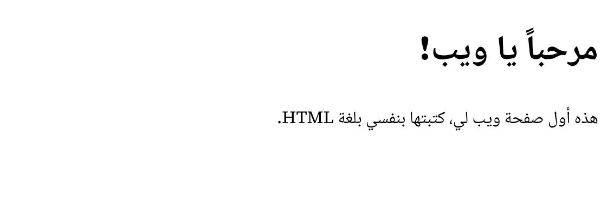
ولكل سطر في الهيكل وظيفة:
| السطر | وظيفته |
|---|---|
<!doctype html> | يخبر المتصفح أن هذه صفحة HTML حديثة. |
<html lang="ar" dir="rtl"> | العنصر الجذر الذي يحيط بكل شيء. lang تحدد لغة الصفحة، وdir="rtl" تجعل اتجاهها من اليمين إلى اليسار، وهي ضرورية لكل صفحة عربية. |
<head> | معلومات عن الصفحة لا تظهر فيها. |
<meta charset="utf-8"> | يستخدم ترميز UTF-8 الخاص بيونيكود، فتظهر العربية وكل اللغات صحيحة. |
<meta name="viewport" …> | يجعل الصفحة تناسب شاشات الهواتف. |
<title> | النص الذي يظهر في تبويب المتصفح ونتائج البحث. |
<body> | كل ما يراه الزائر. |
بِت
جرّب أن تحذف dir="rtl" من صفحتك وتعيد تحميلها: سيلتصق النص العربي بيسار الصفحة، وستقفز علامات الترقيم إلى أماكن غريبة. سطر صغير يصنع فرقاً كبيراً!
ولاحظ إزاحة الأسطر: العناصر التي داخل غيرها مُزاحة مسافتين إلى الداخل. المتصفح لا يهتم بالإزاحة، لكن البشر يهتمون، فهي تريك بنظرة أي عنصر داخل أي عنصر، وPrettier يضبطها لك مع كل حفظ.
معظم محتوى الويب نصوص، وفي HTML عناصر تعطيها بنية. ومن الآن ستعرض الأمثلة الطويلة <body> وحده، لأن <head> هو الهيكل نفسه كل مرة، ولا يتغير إلا <title>. والملفات كاملة في مستودع كود الكتاب.
... <body> <h1>ثلاثة أيام في القاهرة</h1> <p>القاهرة <strong>ضخمة وصاخبة ورائعة</strong>. قضيت فيها ثلاثة أيام ولم أرَ إلا جزءاً <em>صغيراً جداً</em> منها.</p> <h2>اليوم الأول: الأهرامات</h2> <p>وصلنا إلى الجيزة مبكراً قبل الزحام. الهرم الأكبر أضخم مما تخيلت.</p> <h2>اليوم الثاني: القاهرة القديمة</h2> <h3>الغداء</h3> <p>أكلنا الكشري: أرز وعدس ومكرونة وصلصة طماطم حارة.</p> </body> ...
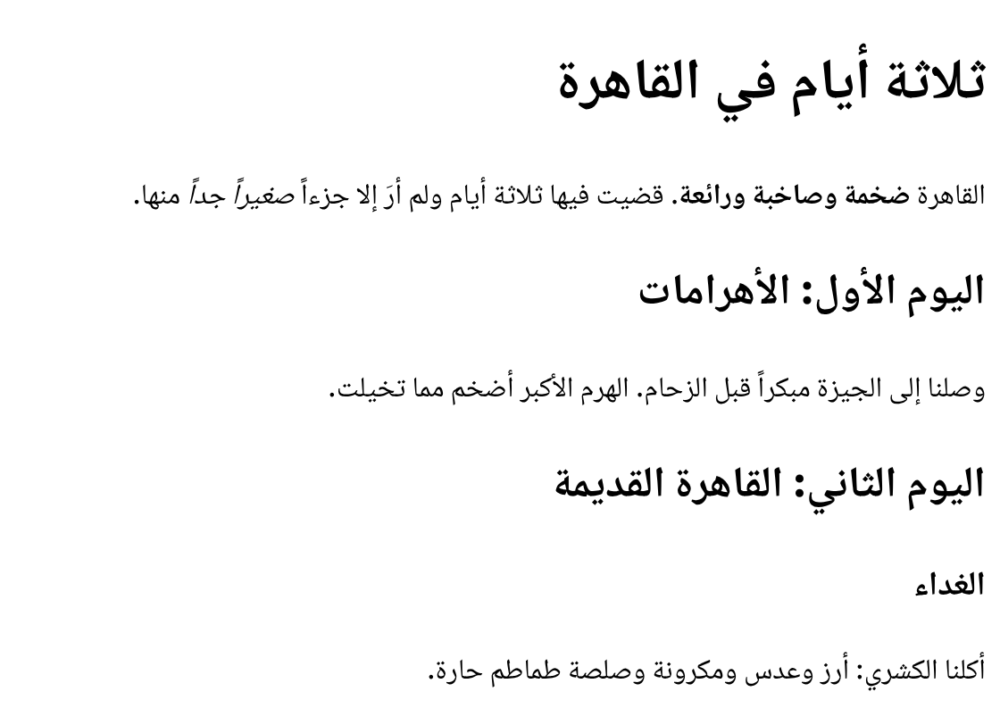
<h1> إلى <h6> عناوين من الأهم إلى الأقل أهمية. استخدم <h1> واحداً لعنوان الصفحة الرئيسي، ثم <h2> للأقسام، و<h3> للأقسام الفرعية، وهكذا، مثل فصول هذا الكتاب وأقسامه.<p> فقرة، ويضع المتصفح مسافة حول كل واحدة.<strong> تجعل النص مهماً (ويظهر عريضاً)، و<em> تؤكده (ويظهر مائلاً).الروابط هي ما يجعل الويب «شبكة»: صفحات متصلة ببعضها في أنحاء العالم كله. والعنصر <a> ينشئ رابطاً، وخاصيته href تحدد وجهته:
... <body> <h1>أماكن للتعلم</h1> <p>أفضل مرجع لـ HTML هو <a href="https://developer.mozilla.org">MDN Web Docs</a>.</p> <p>ارجع إلى <a href="first.html">صفحتي الأولى</a>.</p> <p>افتح <a href="https://developer.mozilla.org/ar/docs/Web/HTML" target="_blank" rel="noopener">دليل HTML</a> في تبويب جديد.</p> </body> ...
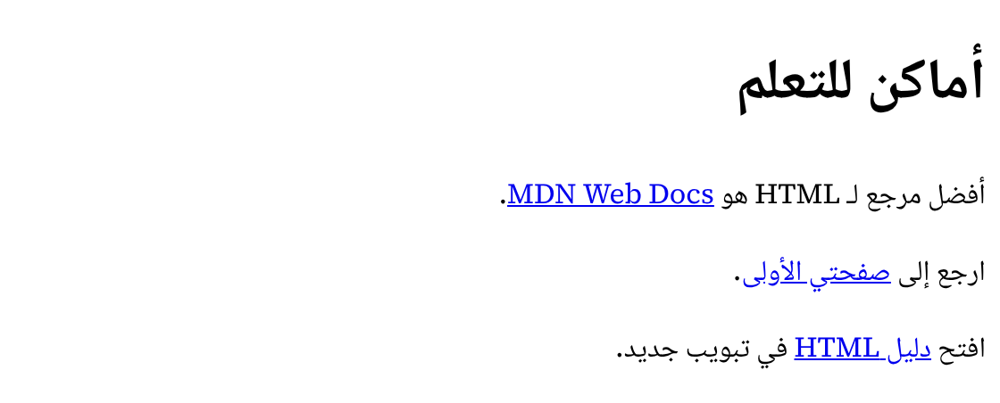
الرابط الأول مطلق: فيه العنوان الكامل لموقع آخر. والثاني نسبي: first.html تعني «الملف المسمى first.html في مجلد هذه الصفحة نفسه». استخدم الروابط النسبية بين صفحات موقعك، فتبقى تعمل حين تنقل الموقع كله إلى خادم.
والرابط الثالث يفتح في تبويب جديد بسبب target="_blank"، وrel="noopener" معه إجراء أمني صغير أضفه دائماً معها.
العنصر <img> يعرض صورة. نزّل الملف bit.svg من مستودع كود الكتاب إلى مجلد chapter-05، أو استخدم أي صورة تحبها:
... <body> <h1>تعرّف على بِت</h1> <img src="bit.svg" alt="بِت، روبوت بنفسجي صغير يلوّح بيده" width="120" height="140"> <p>بِت هو الروبوت اللطيف الذي يرافقك في هذا الكتاب.</p> </body> ...
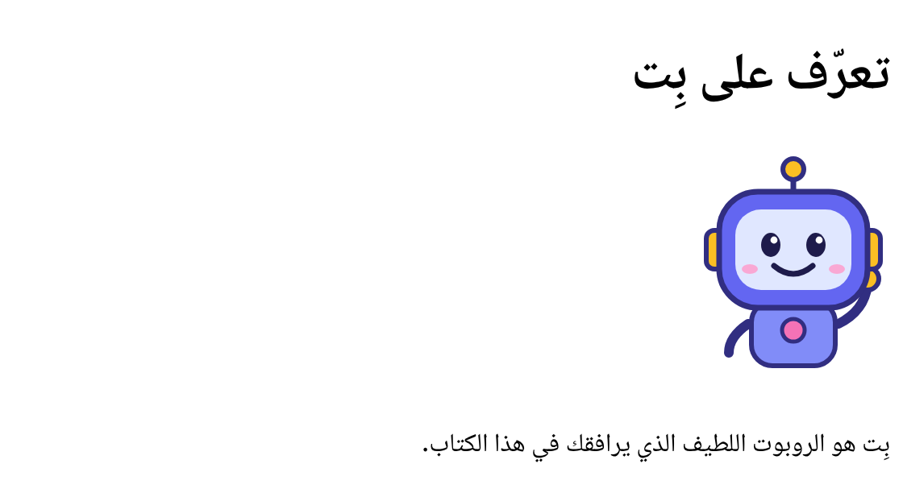
src ملف الصورة: مسار نسبي، أو عنوان كامل على الويب.alt وصف نصي للصورة. تقرؤه قارئات الشاشة، وتفهرسه محركات البحث، وتعرضه المتصفحات إن لم تُحمّل الصورة.width وheight تخبران المتصفح كم مساحة يحجز، فلا تقفز الصفحة أثناء تحميل الصورة.في HTML نوعان شائعان من القوائم: <ul> (قائمة غير مرتبة) حين لا يهم الترتيب، و<ol> (قائمة مرتبة) حين يهم. وداخل الاثنتين يكون كل بند <li>:
... <body> <h1>إعداد الشاي</h1> <h2>تحتاج إلى</h2> <ul> <li>ماء</li> <li>شاي</li> <li>كوب</li> <li>سكر (اختياري)</li> </ul> <h2>الخطوات</h2> <ol> <li>اغلِ الماء.</li> <li>ضع الشاي في الكوب.</li> <li>صبّ الماء وانتظر ثلاث دقائق.</li> <li>أضف السكر إن أحببت.</li> </ol> </body> ...
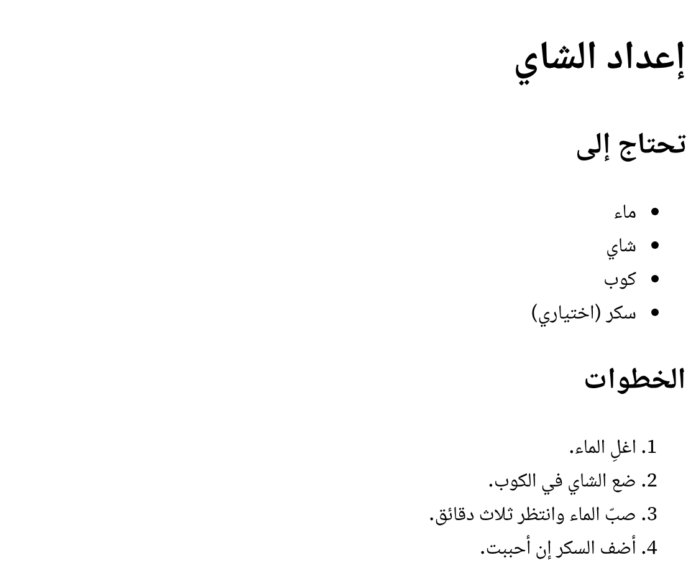
القوائم في كل مكان على الويب، وكثيراً في أماكن لا تخطر ببالك: القائمة أعلى معظم المواقع قائمة روابط، نسّقتها CSS فلم تعد تبدو قائمة.
الصفحات الحقيقية لها أجزاء: منطقة علوية فيها اسم الموقع وقائمته، والمحتوى الرئيسي، وتذييل في الأسفل. وفي HTML عناصر دلالية لهذه الأجزاء، و«دلالية» تعني أنها تصف معنى محتواها لا شكله:
... <body> <header> <h1>مدونة بِت</h1> <nav> <ul> <li><a href="#">الرئيسية</a></li> <li><a href="#">المقالات</a></li> <li><a href="#">من أنا</a></li> </ul> </nav> </header> <main> <article> <h2>لماذا تحب الروبوتات HTML</h2> <p>لأن لكل عنصر وظيفة واضحة، والروبوتات تحب الوظائف الواضحة.</p> </article> </main> <footer> <p>© 2026 بِت. صُنعت بـ HTML.</p> </footer> </body> ...
| العنصر | استخدمه لـ |
|---|---|
<header> | مقدمة الصفحة أو القسم: الشعار والعنوان والقائمة |
<nav> | روابط التنقل الرئيسية |
<main> | المحتوى الرئيسي، وواحد فقط في الصفحة |
<section> | جزء من المحتوى له موضوع، وغالباً له عنوان |
<article> | محتوى مفهوم وحده: تدوينة، أو خبر، أو منتج |
<footer> | آخر الصفحة أو القسم: الحقوق، ووسائل التواصل، والروابط |
وستقابل أيضاً عنصرين بلا معنى على الإطلاق: <div> كتلة عامة، و<span> قطعة عامة من النص داخل السطر. لا تستخدمهما إلا حين لا يناسبك عنصر دلالي، وغالباً كخطافات لـ CSS.
النماذج (forms) تتيح للزوار إرسال المعلومات: بحث، أو تسجيل دخول، أو اشتراك. وستبث فيها الحياة بـ JavaScript في الفصل 12، لكن بنيتها HTML خالصة:
... <body> <h1>اشترك في النشرة</h1> <form> <p> <label for="name">اسمك</label> <input id="name" name="name" type="text" required> </p> <p> <label for="email">بريدك الإلكتروني</label> <input id="email" name="email" type="email" required> </p> <button type="submit">اشترك</button> </form> </body> ...
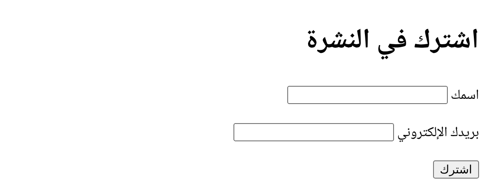
لكل <input> عنصر <label> يرتبط به بتطابق قيمتي for وid. فالنقر على التسمية يضع المؤشر في الحقل، وقارئات الشاشة تنطق التسمية. وtype="email" تُظهر لوحة المفاتيح المناسبة على الهواتف، وrequired تجعل المتصفح يرفض إرسال حقل فارغ. جرّب الضغط على الزر والحقلان فارغان!
لنجمع كل شيء في صفحة حقيقية: ملف تعريفي لسارة، مطورة الويب الجديدة. واكتب بياناتك أنت بدل بياناتها وأنت تكتب.
... <body> <header> <img src="bit.svg" alt="صورة سارة الرمزية: روبوت بنفسجي مبتسم" width="90" height="105"> <h1>سارة خان</h1> <p>مطورة ويب مبتدئة من الإسكندرية</p> <nav> <a href="#about">عني</a> | <a href="#skills">مهاراتي</a> | <a href="#contact">تواصل</a> </nav> </header> <main> <section id="about"> <h2>عني</h2> <p>بدأت تعلم البرمجة هذا العام مع كتاب <em>البرمجة من الصفر</em>، وأحب بناء أدوات صغيرة تجعل الحياة أسهل.</p> </section> <section id="skills"> <h2>مهارات أتعلمها</h2> <ul> <li>HTML</li> <li>CSS</li> <li>JavaScript</li> </ul> </section> <section id="contact"> <h2>تواصل معي</h2> <p>راسلني على <a href="mailto:sara@example.com">sara@example.com</a>.</p> </section> </main> <footer> <p>بنتها سارة بـ HTML وحدها.</p> </footer> </body> ...
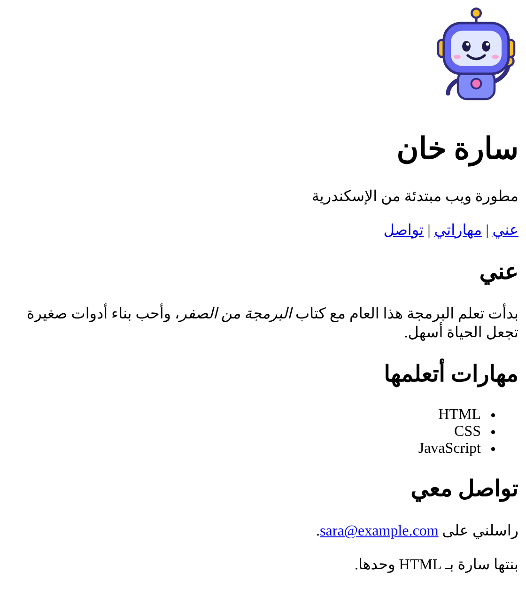
تظهر هنا حيلتان جديدتان. روابط القائمة تشير إلى #about و#skills و#contact، و# يتبعها id تقفز إلى العنصر صاحب هذا الـ id في الصفحة نفسها. ورابط التواصل يبدأ بـ mailto: فيفتح تطبيق البريد عند الزائر.
الصفحة تعمل، وبنيتها ممتازة، لكنها بسيطة الشكل. وهذا طبيعي: وظيفة HTML البنية لا الجمال. وفي الفصلين القادمين ستحوّل هذه الصفحة بالذات إلى شيء تفخر بمشاركته.
بِت
انقر بالزر الأيمن على صفحتك واختر Inspect (فحص). لوحة Elements تعرض شجرة العناصر التي كتبتها. أنت بنيت هذه الشجرة! مرّر الفأرة على كل عنصر وشاهد المتصفح يحدده في الصفحة.
| الخطأ | ماذا يحدث | العلاج |
|---|---|---|
نسيان وسم الإغلاق، مثل </p> | يخمّن المتصفح أين ينتهي العنصر، وأحياناً يخطئ | أغلق كل عنصر له محتوى |
تداخل خاطئ: <p><strong>…</p></strong> | تخطيط لا يمكن توقعه | أغلق العناصر بعكس ترتيب فتحها |
نسيان dir="rtl" في صفحة عربية | النص ملتصق باليسار والترقيم في أماكن غريبة | ابدأ كل صفحة عربية بـ lang="ar" dir="rtl" |
غياب <meta charset="utf-8"> | تظهر الحروف العربية رموزاً غريبة | ابدأ دائماً بالهيكل الكامل |
| أسماء ملفات عربية أو فيها مسافات | الروابط تعمل على حاسوبك وتتعطل على الخادم | استخدم أسماء مثل about-me.html |
name="value".html مع lang (وdir="rtl" للعربية)، ثم head فيه الترميز وviewport والعنوان، ثم body.h1 إلى h6 بالترتيب، والفقرات p، وstrong وem للأهمية والتأكيد.a تنشئ الروابط بـ href، وimg تعرض الصور بـ src وalt له معنى.ul وol تحويان بنود القائمة li.header وnav وmain وsection وarticle وfooter تصف بنية الصفحة.form وlabel وinput وbutton.إجابات «اختبر نفسك»: 1. الخصائص src وalt. و<img> عنصر فارغ: ليس فيه محتوى بين وسمين، فلا يحتاج وسم إغلاق. 2. حين يهم ترتيب البنود، مثل الخطوات أو الترتيب في مسابقة. 3. واحد.
favourites.html فيه عنوان وقائمة غير مرتبة بخمسة أفلام أو كتب أو ألعاب تحبها.favourites.html إلى profile.html، ورابطاً للعودة.<h1>، وصورة بـ alt جيد، وقائمة المكونات، وخطوات مرقمة.<header> و<nav> و<footer>. هل يستخدم العناصر الدلالية، أم <div> فقط؟index.html (عنك)، وprojects.html، وcontact.html فيها نموذج. وفي كل صفحة <header> و<nav> نفسهما بروابط للصفحتين الأخريين.حلول التمارين في آخر الكتاب، وفي مستودع الكود الخاص بالكتاب.
لصفحتك التعريفية هيكل رائع. والآن تعطيها CSS الألوان والخطوط والمسافات والشخصية. وفي آخر الفصل 6 لن تكاد تعرفها.
الفصل 6
ستتعلم في هذا الفصل أن
في آخر الفصل الماضي كانت لصفحتك التعريفية بنية مثالية، بلا أي شخصية. وفي هذا الفصل ستعطيها الألوان والخطوط والمسافات والزوايا المستديرة والظلال. إنه أكثر فصول الكتاب بصرية: كل سطر تكتبه يغيّر شيئاً تراه بعينك.
بِت
هذه الصورة هي هدفنا: HTML نفسها، ومعها ملف CSS واحد. حين رأيت لأول مرة ما تستطيع CSS فعله، أضاء هوائي رأسي!
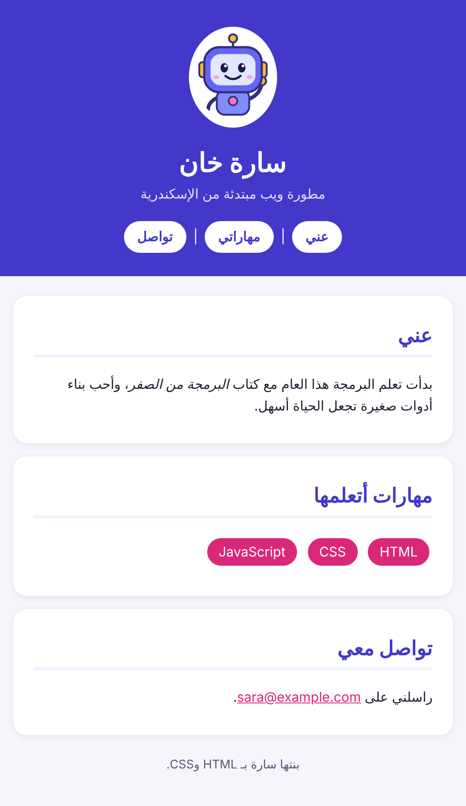
CSS اختصار «أوراق الأنماط المتتالية». HTML تقول ما هي كل قطعة من المحتوى، وCSS تقول كيف تبدو. والفصل بين الاثنين فكرة قوية: تستطيع أن تعيد تصميم موقع كامل بتغيير ملف CSS واحد، دون أن تلمس صفحة واحدة.
وCSS قائمة من القواعد، كل قاعدة تقول «هذه العناصر يجب أن تبدو هكذا»:
property: value; يُسمى تصريحاً.اقرأ هذه القاعدة هكذا: «كل h1 لونه #2b2b2b وحجم خطه 2rem». وكل تصريح ينتهي بفاصلة منقوطة، والكتلة كلها بين قوسين معقوصين.
هناك ثلاث طرق لإضافة CSS، والمحترفون يستخدمون الثالثة غالباً:
style: <p style="color: red">. سريعة، لكنها تخلط الشكل بالمحتوى ويصعب تغييرها لاحقاً.<style> داخل <head>. مفيدة للأمثلة الصغيرة، ونستخدمها في أمثلة هذا الفصل القصيرة..css مستقل مربوط من <head>. فملف تنسيق واحد ينسّق كل صفحات الموقع، ويحمّله المتصفح مرة واحدة.<link rel="stylesheet" href="style.css">
أضف هذا السطر داخل <head> في profile.html، وأنشئ ملف style.css فارغاً بجانبه، وصرت جاهزاً لبدء التنسيق.
المحدد (selector) يقرر العناصر التي تنطبق عليها القاعدة. وأربعة أنواع من المحددات تغطي كل ما تحتاجه تقريباً:
<!doctype html> <html lang="ar" dir="rtl"> <head> <meta charset="utf-8"> <meta name="viewport" content="width=device-width, initial-scale=1"> <title>المحددات</title> <style> h1 { color: #2b2b2b; } .intro { font-style: italic; } #featured { background-color: #fef3c7; } li .badge { color: white; background-color: #2b2b2b; font-size: 0.8rem; } </style> </head> <body> <h1>قائمة قراءة بِت</h1> <p class="intro">كتب يجب أن يقرأها كل مطور جديد.</p> <ul> <li id="featured">البرمجة من الصفر <span class="badge">جديد</span></li> <li>هندسة الواجهات باحتراف</li> <li>هندسة الخوادم باحتراف</li> </ul> <p>تُحدَّث هذه القائمة كل شهر.</p> </body> </html>
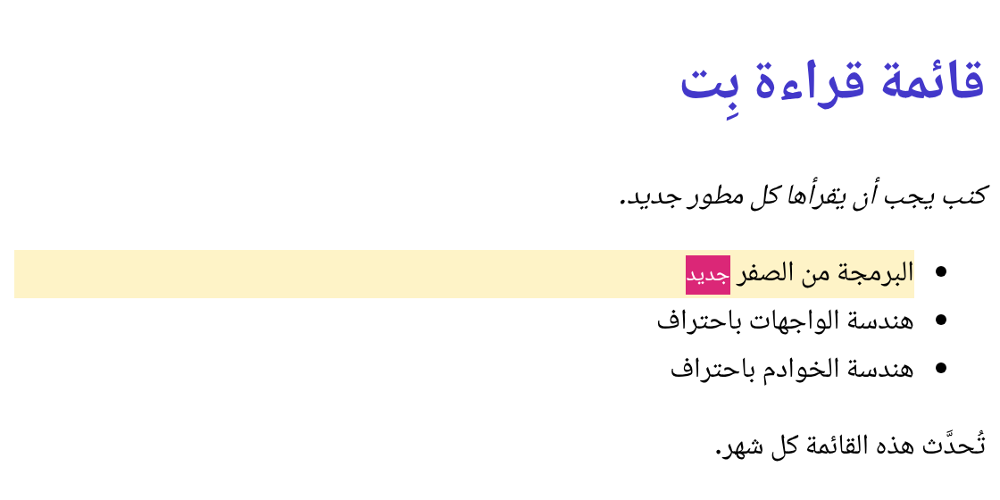
| المحدد | مثال | يختار |
|---|---|---|
| النوع | h1 | كل <h1> في الصفحة |
| الصنف | .intro | كل عنصر فيه class="intro" |
| المعرّف | #featured | العنصر الوحيد الذي فيه id="featured" |
| السليل | li .badge | العناصر ذات الصنف badge الموجودة داخل <li> |
الأصناف (classes) هي حصان العمل في CSS. فالعنصر يمكن أن يأخذ أكثر من صنف تفصلها مسافات (class="card highlighted")، وكثير من العناصر تشترك في صنف واحد. أما المعرّف (id) فيجب أن يكون فريداً في الصفحة، فهو أنسب للروابط مثل #about منه للتنسيق.
أحياناً تحاول قاعدتان ضبط الخاصية نفسها على العنصر نفسه، فتحسم CSS الخلاف بـ التتالي (cascade)، ومنه جاء حرف C في اسمها. وباختصار: المحدد الأكثر تحديداً يفوز (المعرّف يغلب الصنف، والصنف يغلب النوع)، وإن تساوى محددان في التحديد فاز الذي يأتي بعد الآخر.
وبعض الخصائص تُورَّث: إن ضبطت color أو font-family على body أخذ كل عنصر بداخله القيمة نفسها ما لم تقل قاعدة غير ذلك. ولهذا تضبط الخطوط مرة واحدة على body.
تفهم CSS الألوان بأكثر من صيغة:
... <body> <h1>الألوان</h1> <p class="named">اسم: tomato</p> <p class="hex">سداسي: #2b2b2b</p> <p class="rgb">RGB: rgb(15, 118, 110)</p> <p class="alpha">مع شفافية</p> </body> ...
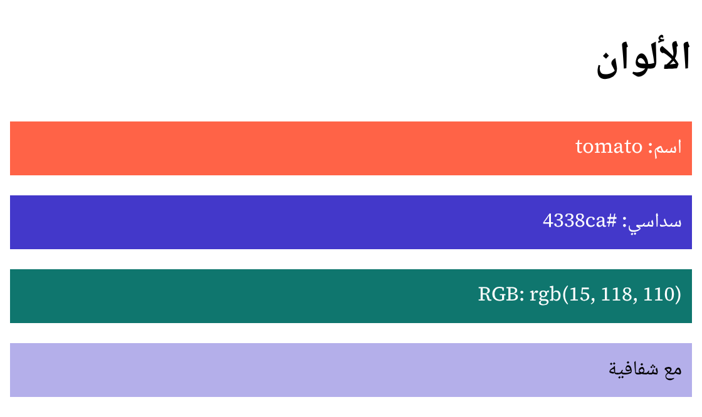
tomato وwhite. سهلة، لكنها نحو 140 اسماً فقط.#2b2b2b: ثلاثة أزواج من الأرقام الست عشرية للأحمر والأخضر والأزرق. وهي ما يعطيك إياه المصممون عادة.rgb() بثلاثة أرقام من 0 إلى 255. وrgba() تضيف رابعاً للشفافية، من 0 (غير مرئي) إلى 1 (معتم تماماً).رأيت في الفصل 1 أن كل نقطة على الشاشة تُحفظ أرقاماً للأحمر والأخضر والأزرق. والرمز السداسي وrgb() طريقتان فقط لكتابة هذه الأرقام الثلاثة.
| الخاصية | مثال | ماذا تفعل |
|---|---|---|
font-family | Tahoma, sans-serif | نوع الخط، مع بدائل إن لم يوجد الأول |
font-size | 1.25rem | حجم الحروف |
font-weight | 700 | السماكة: 400 عادي و700 عريض |
line-height | 1.6 | المسافة بين الأسطر، مضاعفاً لحجم الخط |
text-align | center | المحاذاة: start وcenter وend وjustify |
text-decoration | none | الخطوط تحت النص، وكثيراً ما تُزال من الروابط |
قائمة الخطوط في font-family قائمة أمنيات: يستخدم المتصفح أول خط يجده عنده. والخط العربي يحتاج عناية خاصة، فليس كل خط فيه حروف عربية؛ وفي ملف مشروعنا جعلنا "Segoe UI" وTahoma أولاً لأنهما يعرضان العربية جيداً على Windows، ثم system-ui، وهو خط نظام التشغيل نفسه. واختم القائمة دائماً بعائلة عامة مثل sans-serif أو serif.
الأحجام تحتاج وحدات، وأكثر ثلاث ستستخدمها:
px: البكسل. ثابتة ويمكن توقعها، وجيدة للحدود والتفاصيل الصغيرة.rem: مضاعف لحجم الخط الجذري، وهو 16 بكسل افتراضياً. فـ 1.5rem تساوي 24 بكسل. استخدم rem لأحجام الخطوط، لأنها تحترم من يكبّر حجم النص الافتراضي في متصفحه.%: نسبة من حجم العنصر الأب، وجيدة للعروض.هذه أهم فكرة في تخطيط CSS: كل عنصر صندوق مستطيل. العناوين والفقرات والصور والروابط كلها صناديق، ولكل صندوق أربع طبقات:
... <body> <div class="box">أنا صندوق له حشوة وحدود وهامش.</div> </body> ...
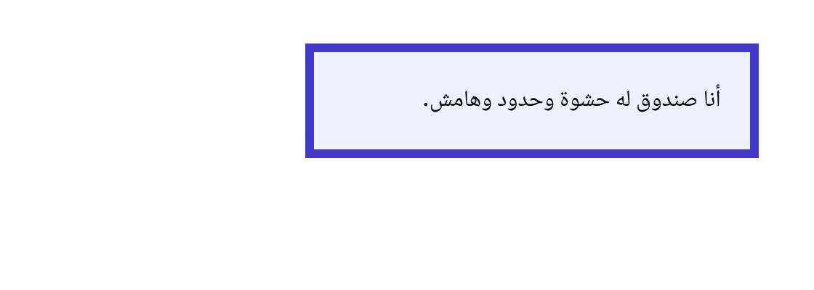
افتح box.html في متصفحك، وافتح أدوات المطورين، واختر الصندوق. في أسفل قسم Styles ترسم أدوات المطورين هذا المخطط بأرقامك الحقيقية بالضبط، وهو أفضل طريقة لتفهم لماذا يقف شيء في المكان الخطأ.
ويمكن ضبط الهوامش والحشوة لكل جهة، أو للجهات كلها مرة واحدة:
padding: 20px; /* all four sides */ padding: 10px 20px; /* top/bottom 10, sides 20 */ padding: 10px 20px 30px; /* top 10, sides 20, bottom 30 */ margin: 0 auto; /* centred horizontally */
الصناديق نوعان رئيسيان. عناصر الكتلة (block) مثل <p> و<h1> و<section> تبدأ في سطر جديد وتأخذ العرض كله. وعناصر السطر (inline) مثل <a> و<strong> و<span> تجلس داخل سطر النص وعرضها بقدر محتواها. ومع display: inline-block يبقى العنصر في السطر لكنه يقبل الحشوة والعرض مثل الكتلة، وهكذا صارت روابط القائمة ووسوم المهارات في مشروعنا على شكل كبسولات.
كثير من المواقع اليوم تعمل باللغات التي تُكتب من اليسار ومن اليمين معاً. والخصائص مثل margin-left مربوطة بجهة فعلية، فتبدو خاطئة حين تنقلب الصفحة للعربية. وفي CSS الحديثة خصائص منطقية تتبع اتجاه القراءة بدل الجهة:
| فعلية | منطقية | معناها |
|---|---|---|
margin-left | margin-inline-start | حيث يبدأ السطر: يسار في الإنجليزية ويمين في العربية |
padding-right | padding-inline-end | حيث ينتهي السطر |
text-align: left | text-align: start | المحاذاة إلى بداية السطر |
ملف تنسيق صفحتنا التعريفية لا يستخدم أي جهة فعلية، فيعمل هو نفسه على النسختين العربية والإنجليزية من الصفحة. وهذه ميزة كبيرة للمطور العربي: استخدم الخصائص المنطقية في كل كود جديد، فمواقعك ستعمل باللغتين من اليوم الأول.
هذا ملف التنسيق كاملاً للصفحة في الشكل 6.1، مقسماً إلى خمسة أجزاء بتعليقات، مثل ملفات التنسيق التي يكتبها المحترفون. اكتبه جزءاً جزءاً، وأعد تحميل الصفحة بعد كل جزء لترى ما يفعله.
/* 1. ألوان الصفحة كلها وخطوطها */ :root { --brand: #2b2b2b; --accent: #2b2b2b; --soft: #eef2ff; } body { margin: 0; font-family: "Segoe UI", Tahoma, system-ui, sans-serif; line-height: 1.6; color: #1e1b2e; background-color: #f5f5fb; } /* 2. الترويسة: شريط ملون فيه الصورة */ header { text-align: center; padding: 32px 16px 24px; color: white; background-color: var(--brand); } header img { background-color: white; border-radius: 50%; padding: 8px; } header h1 { margin: 8px 0 0; font-size: 2rem; } header p { margin: 0 0 16px; opacity: 0.85; } /* 3. القائمة: روابط تبدو أزراراً */ nav a { display: inline-block; padding: 6px 16px; margin: 4px; border-radius: 999px; color: var(--brand); background-color: white; text-decoration: none; font-weight: 700; } /* 4. المحتوى: بطاقات بيضاء في المنتصف */ main { max-width: 640px; margin: 24px auto; padding: 0 16px; } section { background-color: white; border-radius: 16px; padding: 8px 24px 16px; margin-bottom: 16px; box-shadow: 0 2px 8px rgba(30, 27, 46, 0.08); } h2 { color: var(--brand); border-bottom: 3px solid var(--soft); padding-bottom: 4px; } /* 5. المهارات وسوماً ملونة */ ul { padding: 0; } li { display: inline-block; list-style: none; padding: 4px 14px; margin: 4px; border-radius: 999px; color: white; background-color: var(--accent); } a { color: var(--accent); } footer { text-align: center; color: #5b5873; font-size: 0.9rem; padding-bottom: 24px; }
بعض ما في هذا الملف جديد:
/* و*/، ويتجاهلها المتصفح.--brand متغيرات لـ CSS. تعرّف اللون مرة واحدة في :root وتستخدمه في كل مكان بـ var(--brand). ولتغيير اللون الرئيسي للصفحة كلها تغيّر سطراً واحداً.border-radius تستدير بها الزوايا؛ و50% تحوّل المربع إلى دائرة، وقيمة ضخمة مثل 999px تصنع كبسولة.box-shadow تضيف ظلاً ناعماً، فتبدو البطاقات كأنها تطفو.max-width: 640px مع margin: 24px auto تُبقي المحتوى ضيقاً في المنتصف. فالأسطر الطويلة متعبة للقراءة، وهذا تصميم جيد لا زينة فقط.| الخطأ | ماذا يحدث | العلاج |
|---|---|---|
| نسيان الفاصلة المنقوطة بين التصريحات | يُتجاهل التصريح التالي | أنهِ كل تصريح بـ ; |
نسيان النقطة: intro { | تبحث القاعدة عن عنصر <intro> غير موجود | الأصناف تحتاج نقطة: .intro |
مسار خاطئ في <link href> | لا تنسيق على الإطلاق | ابحث في تبويب Network عن 404 |
مسافة في قيمة مثل 2 rem | يُتجاهل التصريح | اكتب الوحدة ملاصقة للرقم: 2rem |
استخدام margin-left في موقع ثنائي اللغة | المسافة في الجهة الخطأ في العربية | استخدم margin-inline-start |
property: value;). واربط ملف التنسيق بـ <link rel="stylesheet">.h1) أو الصنف (.intro) أو المعرّف (#featured) أو السليل (li .badge)، ونسّق بالأصناف غالباً.rgb()، وحافظ على تباين كافٍ.rem لأحجام الخطوط، وpx للتفاصيل الصغيرة، و% للعروض.box-sizing: border-box.margin-inline-start تعمل في الاتجاهين.--brand) تحفظ القيم التي تكررها.إجابات «اختبر نفسك»: 1. .price. 2. بدونها: 200 + 10 + 10 + 2 + 2 = 224 بكسل، ومعها: 200 بكسل بالضبط. 3. لأن rem تكبر مع حجم النص الافتراضي في المتصفح، فتحترم من يحتاج نصاً أكبر.
footer في الصفحة التعريفية داكنة ونصه أبيض.:hover.)class="highlight" إلى إحدى المهارات، واكتب قاعدة تعطيها لوناً مختلفاً عن الباقي.حلول التمارين في آخر الكتاب، وفي مستودع الكود الخاص بالكتاب.
صفحتك جميلة، لكن كل شيء فيها ما زال مكدساً من الأعلى إلى الأسفل. وفي الفصل القادم ستتعلم Flexbox وGrid، أداتي التخطيط الحديثتين، وتبني تخطيطات بأعمدة تتكيف من الهاتف إلى الحاسوب.
الفصل 7
ستتعلم في هذا الفصل أن
لسنوات طويلة كان وضع صندوقين جنباً إلى جنب في صفحة ويب صعباً على نحو مدهش، وكان المطورون يستخدمون حيلاً ذكية تنكسر بسهولة. أما اليوم ففي CSS أداتان صُممتا للتخطيط بالذات: Flexbox لترتيب الأشياء على خط واحد، وGrid للصفوف والأعمدة معاً. وبهما صارت التخطيطات التي كانت تستغرق يوماً تُكتب في أسطر قليلة.
بِت
معلومة طريفة: توسيط عنصر عمودياً كان أشهر نكتة بين مطوري الويب. وفي القسم 7.2 من هذا الفصل ستفعله في ثلاثة أسطر!
عناصر الكتلة تتكدس عادة من الأعلى إلى الأسفل. أضف display: flex إلى العنصر الأب، فيصطف أبناؤه في صف. ويُسمى الأب حاوية مرنة (flex container)، وأبناؤه المباشرون عناصر مرنة (flex items).
<!doctype html> <html lang="ar" dir="rtl"> <head> <meta charset="utf-8"> <meta name="viewport" content="width=device-width, initial-scale=1"> <title>Flexbox</title> <style> body { font-family: system-ui, sans-serif; margin: 16px; } .bar { display: flex; gap: 8px; padding: 8px; margin-bottom: 4px; background-color: #eef2ff; border-radius: 10px; } .bar a { padding: 6px 12px; border-radius: 8px; color: white; background-color: #2b2b2b; text-decoration: none; } .start { justify-content: flex-start; } .between { justify-content: space-between; } .centre { justify-content: center; } code { display: block; margin: 12px 0 4px; color: #5b5873; } </style> </head> <body> <code>justify-content: flex-start</code> <nav class="bar start"><a href="#">الرئيسية</a><a href="#">المقالات</a><a href="#">الفيديو</a><a href="#">من نحن</a></nav> <code>justify-content: space-between</code> <nav class="bar between"><a href="#">الرئيسية</a><a href="#">المقالات</a><a href="#">الفيديو</a><a href="#">من نحن</a></nav> <code>justify-content: center</code> <nav class="bar centre"><a href="#">الرئيسية</a><a href="#">المقالات</a><a href="#">الفيديو</a><a href="#">من نحن</a></nav> </body> </html>
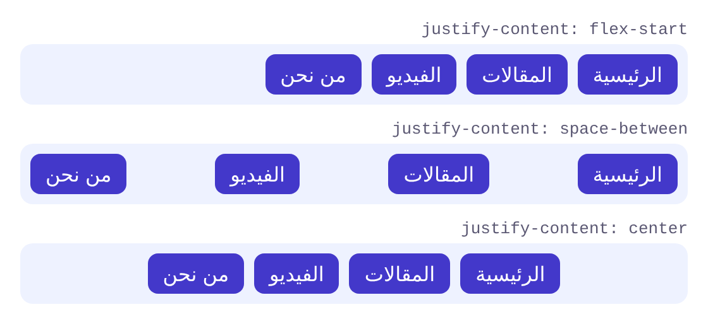
justify-content. لاحظ أنها تبدأ من اليمين في الصفحة العربية.ثلاث خصائص تقوم بمعظم العمل:
| الخاصية | قيم شائعة | ماذا تفعل |
|---|---|---|
gap | 8px و1rem | المسافة بين العناصر، ولا مكان غيره |
justify-content | flex-start وcenter وspace-between وflex-end | أين تقف العناصر على امتداد الصف |
align-items | stretch وcenter وflex-start وflex-end | كيف تصطف العناصر عرضياً (رأسياً في الصف) |
ولاحظ أن «البداية» تعني حيث يبدأ اتجاه القراءة. ففي النسخة العربية من الصفحة تضع CSS نفسها القائمة على اليمين، بلا أي كود إضافي. فـ Flexbox وGrid مبنيتان على الاتجاهات المنطقية التي تعرفت عليها في الفصل 6.
flex-direction: column تحوّل الصف إلى عمود. وflex-wrap: wrap تسمح للعناصر بالانتقال إلى سطر جديد حين لا تكفي المساحة بدل أن تنضغط. وعلى العنصر نفسه، flex: 1 تعني «تمدد لتملأ المساحة الفارغة»، وهكذا تجعل خانة البحث تتمدد بجانب زر ثابت الحجم.
justify-content تعمل على المحور الرئيسي، وalign-items عرضياً. وفي الصفحة العربية يبدأ المحور الرئيسي من اليمين.اجمع justify-content: center وalign-items: center، فيقف العنصر في منتصف حاويته تماماً، أفقياً ورأسياً:
... <body> <div class="card">في المنتصف تماماً!</div> </body> ...
body {
display: flex;
justify-content: center;
align-items: center;
min-height: 260px;
}
بِت
ثلاثة أسطر! المطورون الذين تعلموا CSS قبل Flexbox ما زالوا يبتسمون حين يرون هذا. لكن الحاوية تحتاج ارتفاعاً: هنا أعطتها min-height واحداً. وبدونه يكون الصندوق بطول محتواه فقط، فلا يبقى مكان للتوسيط.
Flexbox ترتب العناصر على خط واحد، أما CSS Grid فترتبها في بعدين معاً، مثل جدول أو جدول بيانات. ضع display: grid على الحاوية وصِف أعمدتها:
<!doctype html> <html lang="ar" dir="rtl"> <head> <meta charset="utf-8"> <meta name="viewport" content="width=device-width, initial-scale=1"> <title>معرض بالشبكة</title> <style> body { font-family: system-ui, sans-serif; margin: 16px; } .gallery { display: grid; grid-template-columns: repeat(auto-fit, minmax(140px, 1fr)); gap: 12px; } .gallery div { padding: 28px 8px; text-align: center; border-radius: 12px; color: white; background-color: #2b2b2b; font-weight: 700; } </style> </head> <body> <div class="gallery"> <div>HTML</div> <div>CSS</div> <div>JavaScript</div> <div>Git</div> <div>Node.js</div> <div>DevTools</div> </div> </body> </html>
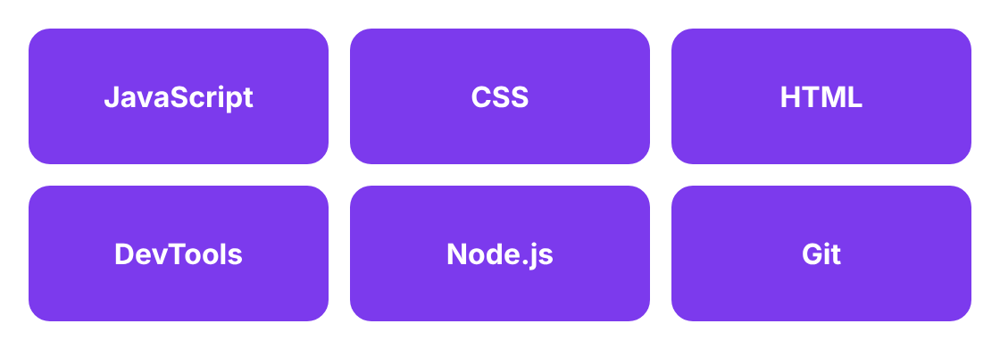
السطر السحري هو:
grid-template-columns: repeat(auto-fit, minmax(140px, 1fr));
اقرأه من الداخل إلى الخارج. 1fr تعني «جزءاً واحداً من المساحة الفارغة». وminmax(140px, 1fr) تعني «140 بكسل على الأقل، وإلا فتقاسموا المساحة بالتساوي». وrepeat(auto-fit, …) تعني «أعمدة كهذه بقدر ما يتسع». فتحصل على أربعة أعمدة في الشاشة العريضة، وعمودين في الهاتف، دون أن تكتب قاعدة واحدة لأي منهما. وهذا قلب التصميم المتجاوب.
| تكتب | تحصل على |
|---|---|
grid-template-columns: 1fr 1fr | عمودين متساويين |
grid-template-columns: 200px 1fr | شريط جانبي ثابت وعمود رئيسي مرن |
grid-template-columns: repeat(3, 1fr) | ثلاثة أعمدة متساوية |
grid-column: 1 / -1 (على عنصر) | يمتد العنصر على الأعمدة كلها، من أول خط إلى آخر خط |
وتستطيع Grid أن تخطط صفحة كاملة. تعطي كل جزء اسماً، ثم «ترسم» التخطيط بهذه الأسماء، كأنه رسم بالحروف:
... <body> <div class="page"> <header>الترويسة</header> <aside>الشريط الجانبي</aside> <main>المحتوى الرئيسي</main> <footer>التذييل</footer> </div> </body> ...
.page {
display: grid;
grid-template-columns: 180px 1fr;
grid-template-areas:
"head head"
"side main"
"foot foot";
gap: 10px;
}
header { grid-area: head; }
aside { grid-area: side; }
main { grid-area: main; }
footer { grid-area: foot; }
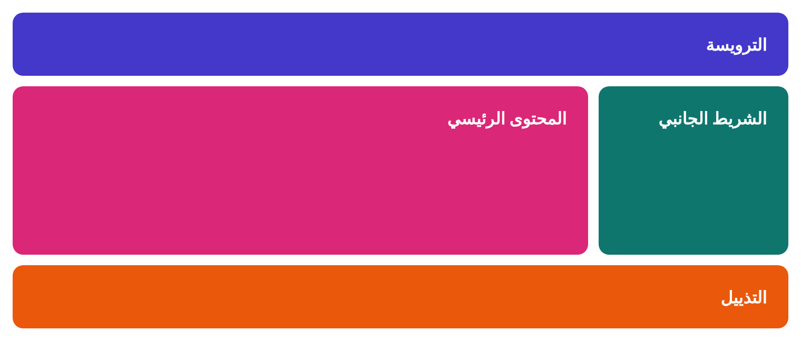
كل سطر بين علامتي تنصيص صف، وكل كلمة خلية. و"head head" تعني أن الترويسة تمتد على العمودين. وصار تغيير التخطيط كله مسألة إعادة رسم الصورة، وهذا بالضبط ما نفعله للشاشات الصغيرة.
أكثر من نصف زيارات الويب تأتي من الهواتف. واستعلام الوسائط (media query) يطبق CSS فقط حين يصح شرط ما، وغالباً عرض الشاشة:
@media (max-width: 600px) {
.page {
grid-template-columns: 1fr;
grid-template-areas: "head" "main" "side" "foot";
}
}
في الشاشات التي عرضها 600 بكسل أو أقل تصير الصفحة عموداً واحداً، وينتقل المحتوى الرئيسي فوق الشريط الجانبي، لأن المحتوى على الهاتف هو ما جاء الناس من أجله:
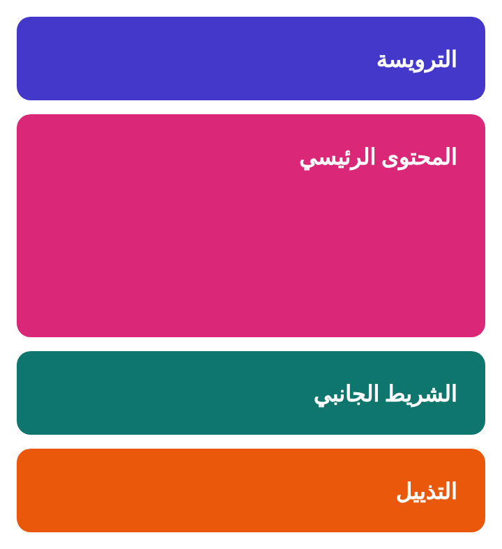
صفحتك التعريفية جميلة، لكنها ما زالت عموداً واحداً طويلاً. فلنضف جزءاً سادساً إلى style.css فيه تخطيط حقيقي، دون أن يتغير شيء في HTML.
/* 6. الفصل 7: التخطيط بـ Flexbox وGrid */ *, *::before, *::after { box-sizing: border-box; } header { display: flex; flex-wrap: wrap; align-items: center; justify-content: center; gap: 8px 24px; } header nav { flex-basis: 100%; } main { max-width: 900px; display: grid; gap: 16px; } section { margin-bottom: 0; } ul { display: flex; flex-wrap: wrap; gap: 8px; } li { margin: 0; } /* الشاشات العريضة: الصورة بجانب الاسم، والبطاقات في عمودين */ @media (min-width: 700px) { header { justify-content: flex-start; text-align: start; padding-inline: 48px; } main { grid-template-columns: 1fr 1fr; } #about { grid-column: 1 / -1; } }
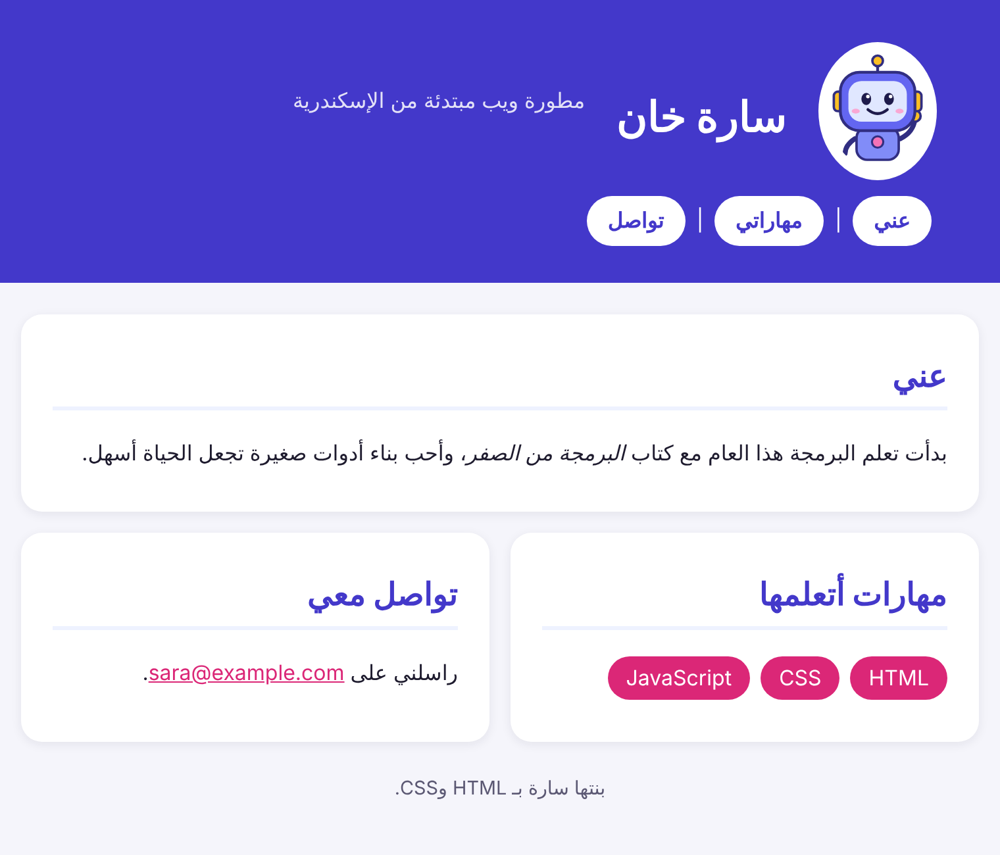
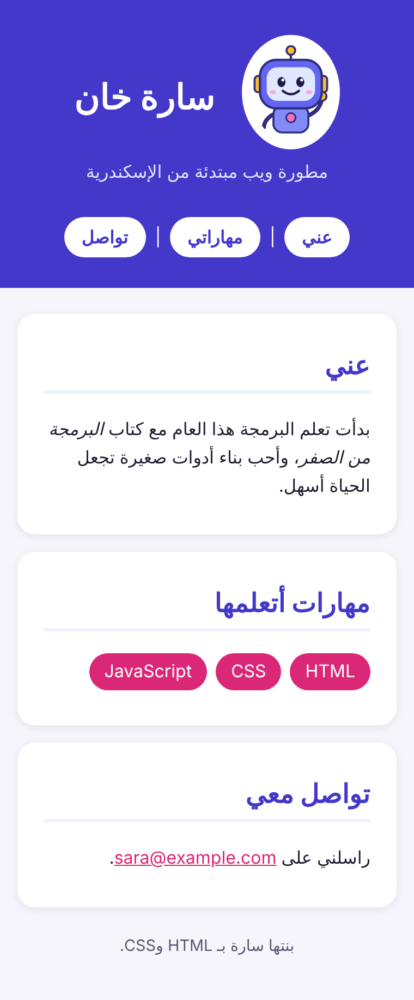
انظر ماذا يفعل كل جزء:
header حاوية مرنة تلتف. ففي الشاشة العريضة تقف الصورة والاسم جنباً إلى جنب، وflex-basis: 100% تُجبر القائمة على سطر خاص بها.main شبكة لها gap، فتتباعد البطاقات بالشبكة لا بهوامشها.main عمودين، وتمتد بطاقة «عني» عليهما بـ grid-column: 1 / -1.padding-inline خاصية منطقية: في الصفحة العربية تنتقل الحشوة الإضافية إلى الجهات الصحيحة وحدها.| الخطأ | ماذا يحدث | العلاج |
|---|---|---|
وضع display: flex على العناصر بدل الأب | لا يصطف شيء | flex وgrid توضعان على الحاوية |
| استخدام الهوامش للمباعدة بين عناصر flex أو grid | مسافات غير متساوية عند الأطراف | استخدم gap |
| التوسيط الرأسي في حاوية بلا ارتفاع | لا يتحرك العنصر | أعط الحاوية height أو min-height |
| نسيان وسم viewport | تعرض الهواتف صفحة حاسوب صغيرة، وتبدو استعلامات الوسائط معطلة | أبقِ <meta name="viewport"> في head |
عروض ثابتة مثل width: 900px | تمرير أفقي على الهواتف | استخدم max-width و% وfr |
display: flex تصف الأبناء في صف (أو عمود). واستخدم gap وjustify-content وalign-items.flex-wrap: wrap تنقل العناصر إلى أسطر جديدة.justify-content: center مع align-items: center توسّط أي شيء.display: grid تصنع صفوفاً وأعمدة. وfr تقسم المساحة الفارغة، وrepeat(auto-fit, minmax(…, 1fr)) تصنع معارض متجاوبة.grid-template-areas ترسم تخطيط الصفحة بالأسماء.إجابات «اختبر نفسك»: 1. display: flex على الأب. 2. جزء واحد من المساحة الفارغة: عمودان بـ 1fr يتقاسمانها بالتساوي. 3. يطبق CSS التي بداخله فقط حين يكون عرض الشاشة 700 بكسل على الأقل.
ads، إلى layout.html، تظهر في نهاية المحتوى الرئيسي على الشاشات العريضة، وفي أسفل الصفحة تماماً على الهواتف.حلول التمارين في آخر الكتاب، وفي مستودع الكود الخاص بالكتاب.
صار لصفحاتك بنية وتنسيق وتخطيط، لكنها لا تستطيع أن تفكر بعد. والجزء الثالث يأتي بـ JavaScript: القيم والمتغيرات والقرارات، أول خطوة نحو صفحات تتفاعل مع زوارها.
الفصل 8
ستتعلم في هذا الفصل أن
let وconstif وelse وswitchكل برنامج مفيد يفعل شيئين مرة بعد مرة: يتذكر معلومات، ثم يتخذ قرارات بناءً عليها. شبّاك التذاكر في السينما يتذكر عمرك واليوم من الأسبوع، ثم يقرر كم تدفع. واللعبة تتذكر نقاطك، ثم تقرر هل فزت. وفي هذا الفصل ستعلّم JavaScript أن تفعل الاثنين.
بِت
أهلاً من جديد! اليوم ستعلّم الحاسوب أن يختار. وفي آخر هذا الفصل ستكون قد بنيت آلة تذاكر تفكر بنفسها. هيا بنا!
افتح المحرر والطرفية اللذين جهزتهما في الفصل 3. كل مثال في هذا الفصل ملف صغير تشغّله بـ Node.js. اكتب الأمثلة بيدك ولا تنسخها: أصابعك تتعلم شكل اللغة أسرع من عينيك.
القيمة قطعة واحدة من البيانات: رقم، أو نص، أو جواب بنعم أو لا. والقيم هي المادة الخام التي يعمل بها البرنامج، كما أن الدقيق والماء هما المادة الخام للخبز.
أنشئ ملفاً اسمه values.js واكتب فيه هذا البرنامج:
console.log(42); console.log(3.5); console.log("مرحباً"); console.log(true); console.log(typeof 42); console.log(typeof "مرحباً"); console.log(typeof true);
شغّله من الطرفية بالأمر node values.js، وسترى:
42 3.5 مرحباً true number string boolean
الأمر console.log يطبع قيمة في الطرفية. وهو أبسط طريقة لترى ما يفعله برنامجك، وستستخدمه في كل فصول هذا الكتاب.
ويعرض البرنامج ثلاثة من أشهر أنواع القيم، ويسميها المبرمجون الأنواع (types):
| النوع | ماذا يحمل | أمثلة |
|---|---|---|
number | الأعداد الصحيحة والعشرية | 42 و3.5 و-7 |
string | النص، ويُكتب بين علامتي تنصيص | "مرحباً" و'القاهرة' |
boolean | واحد فقط من جوابين | true وfalse |
الكلمة typeof تسأل JavaScript عن نوع القيمة. لن تحتاجها كثيراً في البرامج الحقيقية، لكنها طريقة جيدة لتختبر فهمك وأنت تتعلم.
القيمة وحدها تختفي بمجرد استخدامها. ولتحتفظ بها وتستعملها لاحقاً، تحفظها في متغير. والمتغير اسم يشير إلى قيمة.
تعطيك JavaScript كلمتين لإنشاء متغير: let وconst.
let score = 0; console.log(score); score = score + 10; console.log(score); const name = "سارة"; console.log("اللاعبة:", name);
0 10 اللاعبة: سارة
اقرأ السطر score = score + 10; من اليمين إلى اليسار. تحسب JavaScript أولاً score + 10، أي 0 + 10، ثم تضع النتيجة في score. علامة التساوي الواحدة لا تعني «يساوي» كما في الرياضيات، بل تعني «احفظ القيمة التي على اليمين في الاسم الذي على اليسار». ويسميها المبرمجون عامل الإسناد.
استخدم let لقيمة ستتغير، مثل النقاط أو العدّاد أو المجموع. واستخدم const لقيمة لن تتغير بعد أن تُحدَّد، مثل اسم اللاعب أو أقصى عدد للاعبين. وإن حاولت تغيير const أوقفت JavaScript برنامجك بخطأ:
const maxPlayers = 4; maxPlayers = 5;
maxPlayers = 5;
^
TypeError: Assignment to constant variable.هذا الخطأ هدية لا عقوبة. فهو يخبرك بالضبط أي سطر خالف قاعدة وضعتها أنت. والمطورون المحترفون يستخدمون const دائماً، ولا ينتقلون إلى let إلا حين يعرفون أن القيمة يجب أن تتغير. افعل مثلهم: كلما قلّ ما يتغير، قلّ ما يمكن أن يخطئ.
اسم المتغير يمكن أن يحتوي على حروف وأرقام و_ و$، لكنه لا يبدأ برقم، ولا يكون كلمة تستخدمها JavaScript أصلاً مثل if أو let. وحين يتكون الاسم من عدة كلمات، يصلها مطورو JavaScript بطريقة camelCase: الكلمة الأولى بحروف صغيرة، وكل كلمة بعدها تبدأ بحرف كبير. والأسماء تُكتب بالإنجليزية، فهي اللغة المشتركة بين المبرمجين في كل مكان.
| جيد | ضعيف | السبب |
|---|---|---|
ticketPrice | tp | يقول ماذا يحمل |
isMember | member1 | is تخبرك أنه boolean |
maxPlayers | max_players_number | قصير، ويتبع أسلوب camelCase |
اكتب الأسماء للشخص الذي سيقرأ كودك بعد ستة أشهر. وكثيراً ما يكون هذا الشخص أنت.
العامل (operator) رمز يأخذ قيماً وينتج قيمة جديدة. وأنت تعرف معظم عوامل الحساب من المدرسة.
const price = 12; const count = 3; console.log(price * count); console.log(10 / 4); console.log(10 % 4); const first = "سارة"; const last = "خان"; console.log(first + " " + last); console.log(`المجموع: ${price * count} دولاراً`); console.log(5 === 5); console.log(5 === "5"); console.log(5 == "5");
36 2.5 2 سارة خان المجموع: 36 دولاراً true false true
لنمرّ على البرنامج في ثلاث مجموعات.
العوامل + و- و* و/ تجمع وتطرح وتضرب وتقسم. وقد يكون الجديد عليك هو %، عامل باقي القسمة. فـ 10 % 4 تساوي 2، لأن 4 تدخل في 10 مرتين ويبقى 2. وهو أنفع مما يبدو: n % 2 تساوي 0 فقط حين يكون n زوجياً.
حين يُستخدم + مع النصوص فإنه يصلها ببعضها. وأنظف طريقة لبناء النص هي القالب النصي (template literal): نص بين علامتي `، وكل ما بداخل ${ } فيه يُحسب ويوضع في مكانه. قارن الطريقتين في البرنامج؛ معظم الكود الحديث يستخدم القوالب النصية لأنها أسهل في القراءة.
عوامل المقارنة تنتج دائماً قيمة boolean:
| العامل | المعنى | مثال | النتيجة |
|---|---|---|---|
=== | يساوي | 3 === 3 | true |
!== | لا يساوي | 3 !== 4 | true |
< و> | أصغر من، أكبر من | 2 < 1 | false |
<= و>= | أصغر أو يساوي، أكبر أو يساوي | 5 >= 5 | true |
انظر جيداً إلى آخر سطرين في المخرجات. 5 === "5" تعطي false، لأن الرقم ليس نصاً. أما 5 == "5" فتعطي true: علامة التساوي المزدوجة تحوّل إحدى القيمتين إلى نوع الأخرى بصمت قبل المقارنة. وهذا التحويل الصامت يخفي الأخطاء.
الآن وقد صرت تقارن القيم، يمكنك أن تجعل برنامجك يختار. الجملة if تنفّذ مجموعة من الأسطر فقط حين يكون الشرط true. السينما تأخذ أسعاراً مختلفة حسب العمر، وهكذا يقرر البرنامج:
const age = 9; let price; if (age < 4) { price = 0; } else if (age < 13) { price = 6; } else if (age >= 65) { price = 7; } else { price = 10; } console.log(`العمر ${age}: السعر ${price}$`);
العمر 9: السعر 6$
تفحص JavaScript الشروط من الأعلى إلى الأسفل، وتتوقف عند أول شرط يكون true:
ولأن الترتيب مهم، فالطفل ذو التسع سنوات يقع في age < 13 ولا يصل إلى الشروط التي بعده. ولو بدّلت الشرطين الأولين لدفع طفل في الثانية 6 بدل أن يدخل مجاناً. وحين تكتب سلسلة else if اسأل نفسك دائماً: «لو صحّ شرطان معاً، أيهما يجب أن يُنفَّذ؟»
بِت
حيلتي في السلاسل الطويلة: ضع أضيق شرط أولاً، واترك حالة «كل من سواهم» لـ else في الآخر.
وأجزاء الجملة هي:
if (condition) { ... }: تُنفَّذ الأسطر فقط حين يكون الشرط true.else if (condition) { ... }: يُفحص فقط حين تكون كل الشروط قبله false، ويمكنك أن تضع منه ما تحتاج.else { ... }: يُنفَّذ حين لا يصح شيء مما قبله. وهو اختياري، ولا يكون إلا واحداً.ولاحظ أيضاً أن price عُرّف بـ let بلا قيمة. فيبدأ بالقيمة الخاصة undefined، أي «لا شيء بعد»، ثم يعطيه كل فرع قيمة حقيقية.
القرارات الحقيقية تعتمد غالباً على أكثر من شيء. وثلاثة عوامل منطقية تجمع بين قيم boolean:
| العامل | الاسم | يكون صحيحاً حين |
|---|---|---|
&& | و (and) | يصح الطرفان معاً |
|| | أو (or) | يصح طرف واحد على الأقل |
! | ليس (not) | تكون القيمة false (يقلب الصحيح والخطأ) |
const isMember = true; const day = "الثلاثاء"; if (isMember && day === "الثلاثاء") { console.log("نصف السعر اليوم!"); } const hasTicket = false; if (!hasTicket) { console.log("من فضلك اشترِ تذكرة."); } const nickname = ""; const shown = nickname || "ضيف"; console.log(shown);
نصف السعر اليوم! من فضلك اشترِ تذكرة. ضيف
الجملة if الأولى تعطي نصف السعر للأعضاء وحدهم، ويوم الثلاثاء وحده. والثانية تُقرأ بسهولة: «إن لم تكن معه تذكرة». أما آخر سطرين فيستخدمان حيلة شائعة تحتاج شرحاً.
تقبل JavaScript في الشرط أي قيمة، لا true وfalse وحدهما. وست قيم تُعامل كأنها خطأ، ويسميها المبرمجون falsy: false و0 و"" (النص الفارغ) وnull وundefined وNaN. وكل قيمة غيرها truthy.
والعامل || يعيد أول قيمة truthy يجدها. ولأن nickname نص فارغ، وهو falsy، فإن nickname || "ضيف" تعطي "ضيف". وهذه طريقة سريعة لوضع قيمة افتراضية.
حين تقارن قيمة واحدة بقائمة من الاحتمالات المحددة، تكون الجملة switch أسهل في القراءة من سلسلة طويلة من else if:
const size = "M"; let drink; switch (size) { case "S": drink = 2; break; case "M": drink = 3; break; case "L": drink = 4; break; default: drink = 0; } console.log(`المشروب: ${drink}$`);
المشروب: 3$
تقفز JavaScript إلى الحالة case التي تطابق size بالمقارنة ===، وتنفّذ الكود من هناك. والجملة break تُنهي switch. فإن نسيتها أكملت JavaScript إلى الحالة التالية، وهذا ما لا تريده تقريباً أبداً. والحالة default تُنفَّذ حين لا يطابق شيء.
استخدم switch للمطابقة التامة لقيمة واحدة، مثل المقاسات أو خيارات القائمة أو أيام الأسبوع. واستخدم if للنطاقات مثل الأعمار، أو للشروط التي تتضمن أكثر من متغير.
لنجمع كل ما تعلمناه. شبّاك التذاكر التالي يقرر سعر تذكرة السينما بأربع قواعد:
بِت
هذا أول برنامج لك يتخذ قرارات حقيقية وحده. اقرأه مرة، وشغّله، ثم غيّر القيم والعب به!
// شبّاك التذاكر: غيّر هذه القيم وشغّل البرنامج من جديد. const age = 34; const isMember = true; const day = "الثلاثاء"; const showTime = 22; // بنظام 24 ساعة let price; if (age < 4) { price = 0; } else if (age < 13 || age >= 65) { price = 6; } else { price = 10; } if (isMember && day === "الثلاثاء") { price = price / 2; } if (showTime >= 22 && price > 0) { price = price - 1; } const message = price === 0 ? "الدخول مجاني" : `ادفع ${price}$ من فضلك`; console.log(message);
ادفع 4$ من فضلك
تتبّع البرنامج كما يفعل الحاسوب. الزائر عمره 34، فيجعل القرار الأول price عشرة. وهو عضو واليوم ثلاثاء، فينزل السعر إلى النصف ويصير 5. والعرض يبدأ في الساعة 22:00، فيُخصم واحد آخر، ويدفع الزائر 4.
والسطر الأخير يستخدم شيئاً جديداً واحداً، هو العامل الشرطي، ويُسمى كثيراً ternary:
condition ? valueIfTrue : valueIfFalse
إنه if/else مختصرة تنتج قيمة. استخدمه للاختيارات القصيرة البسيطة مثل هذا فقط؛ وحين يطول أحد طرفيه تكون if العادية أوضح.
| الخطأ | ماذا يحدث | العلاج |
|---|---|---|
if (age = 18) | يُسند 18 بدل أن يقارن، فيصح الشرط دائماً | استخدم === |
مقارنة "5" بـ 5 | === تعطي false | تأكد أن القيمتين من النوع نفسه |
ترتيب خاطئ في else if | شرط أوسع في الأعلى يلتقط حالات تخص شرطاً بعده | ضع أضيق الشروط أولاً |
نسيان break | تُنفَّذ الحالة case التالية أيضاً | أنهِ كل case بـ break |
تغيير const | TypeError: Assignment to constant variable | استخدم let إن كانت القيمة ستتغير |
number وstring وboolean.const دائماً، وlet حين يجب أن تتغير القيمة.= الواحدة تحفظ قيمة، ولا تقارن.+ - * / %) وتصل النصوص وتقارن. وقارن دائماً بـ ===.if وelse if وelse تختار بين مجموعات من الأسطر. وأول شرط صحيح هو الذي يُنفَّذ، فالترتيب مهم.&& و|| و! تجمع بين الشروط. وست قيم falsy، وكل ما عداها truthy.switch تطابق قيمة واحدة بحالات ثابتة، وتنتهي كل حالة بـ break.إجابات «اختبر نفسك»: 1. "string"، لأن علامات التنصيص تجعلها نصاً. 2. 2، لأن 5 تدخل في 17 ثلاث مرات ويبقى 2. 3. false، لأن الرقم لا يساوي النص أبداً.
const اسمه temperature. اطبع «بارد» تحت 15، و«دافئ» من 15 إلى 29، و«حار» من 30 فأكثر.7 % 3 و"7" + 3 و7 === "7" و!true.n % 2 === 0. اطبع هل العدد زوجي أم فردي، وهل هو موجب أم سالب أم صفر.switch.js بـ if وelse if. أي النسختين أسهل عليك في القراءة، ولماذا؟حلول التمارين في آخر الكتاب، وفي مستودع الكود الخاص بالكتاب.
شبّاك التذاكر الآن يخدم زائراً واحداً فقط. وفي الفصل القادم ستتعلم أن تحفظ قوائم كاملة من القيم في المصفوفات، وأن تكرر العمل بالحلقات، فيخدم الشبّاك طابوراً من مئة زائر بالأسطر القليلة نفسها.
الفصل 9
ستتعلم في هذا الفصل أن
for وfor…of وwhilebreak وcontinueالحواسيب رائعة في فعل الشيء نفسه مرة بعد مرة، دون أن تملّ أو تخطئ سهواً في المحاولة الألف. وفي هذا الفصل ستتعلم الأداتين اللتين تجعلان ذلك ممكناً: المصفوفات التي تحفظ قوائم القيم، والحلقات التي تكرر الكود لكل واحدة منها.
بِت
أتذكر شبّاك التذاكر من الفصل 8؟ كان يخدم زائراً واحداً فقط. وفي آخر هذا الفصل سيخدم طابوراً كاملاً، ولن يطول الكود إلا قليلاً. هذا سحر الحلقات!
المصفوفة (array) قائمة مرتبة من القيم محفوظة في متغير واحد. تكتبها بين قوسين مربعين، وتفصل العناصر بفواصل:
const fruits = ["تفاح", "موز", "مانجو"]; console.log(fruits); console.log(fruits.length); console.log(fruits[0]); console.log(fruits[fruits.length - 1]); fruits.push("برتقال"); console.log(fruits); console.log(fruits.includes("موز")); console.log(fruits.indexOf("مانجو"));
[ 'تفاح', 'موز', 'مانجو' ] 3 تفاح مانجو [ 'تفاح', 'موز', 'مانجو', 'برتقال' ] true 2
لكل عنصر موضع يُسمى الفهرس (index)، والفهارس تبدأ من الصفر لا من الواحد. فـ fruits[0] أول عنصر، وfruits[2] الثالث. والخاصية length تخبرك بعدد العناصر، ولهذا يكون آخر عنصر دائماً عند length - 1.
وتأتي المصفوفات مع أدوات جاهزة تُسمى الدوال المدمجة (methods)، وتُستخدم بنقطة:
| الدالة | ماذا تفعل | مثال |
|---|---|---|
push(x) | تضيف x في الآخر | fruits.push("كيوي") |
pop() | تحذف آخر عنصر وتعيده | fruits.pop() |
includes(x) | هل x في المصفوفة؟ (true أو false) | fruits.includes("مانجو") |
indexOf(x) | أين x؟ (-1 إن لم يوجد) | fruits.indexOf("مانجو") |
join(sep) | تصل كل العناصر في نص واحد | fruits.join("، ") |
slice(a, b) | تنسخ العناصر من الفهرس a إلى ما قبل b | fruits.slice(0, 2) |
forالحلقة (loop) تنفّذ مجموعة الأسطر نفسها مرات عدة. وحلقة for التقليدية تعدّ:
for (let i = 1; i <= 5; i++) { console.log(`الخطوة ${i}`); } // العد التنازلي for (let n = 3; n > 0; n--) { console.log(n); } console.log("انطلق!");
الخطوة 1 الخطوة 2 الخطوة 3 الخطوة 4 الخطوة 5 3 2 1 انطلق!
في السطر for (let i = 1; i <= 5; i++) ثلاثة أجزاء تفصلها فواصل منقوطة:
let i = 1 تُنفَّذ مرة واحدة قبل الحلقة.i <= 5 يُفحص قبل كل دورة، فإن صار false انتهت الحلقة.i++ تُنفَّذ بعد كل دورة. وi++ اختصار لـ i = i + 1، وn-- تعني n = n - 1.وكل دورة من الحلقة تُسمى تكراراً (iteration). والاسم i عادة قديمة من الرياضيات؛ استخدمه للعدادات البسيطة، واختر اسماً له معنى لما سواها.
for…of: عنصر بعد عنصرفي أغلب الأحيان لا يهمك العدّ، بل تريد أن تفعل شيئاً مع كل عنصر في المصفوفة. وحلقة for…of تفعل ذلك بالضبط، وهي الحلقة التي ستستخدمها أكثر من غيرها:
const prices = [12, 5, 30, 8]; let total = 0; for (const price of prices) { total = total + price; } console.log(`عدد الأصناف: ${prices.length}`); console.log(`المجموع: ${total}`); console.log(`المتوسط: ${total / prices.length}`);
عدد الأصناف: 4 المجموع: 55 المتوسط: 13.75
اقرأ for (const price of prices) هكذا: «لكل سعر في الأسعار». في كل تكرار يحمل price العنصر التالي. وهذا النمط، متغير خارج الحلقة يضيف إليه كل تكرار، يُسمى المُجمِّع (accumulator). وستستخدمه لحساب المجاميع والأعداد والقيم الكبرى وغيرها كثير. وقد رأيته في الفصل 2: إيجاد أكبر بطاقة كان مجمِّعاً أيضاً.
whileأحياناً لا تعرف مسبقاً كم دورة تحتاج. وحلقة while تستمر ما دام الشرط صحيحاً:
let savings = 0; let week = 0; const goal = 100; while (savings < goal) { week++; savings = savings + 15; } console.log(`وصلت إلى ${savings} بعد ${week} أسابيع`);
وصلت إلى 105 بعد 7 أسابيع
إن ادخرت 15 كل أسبوع، فمتى تصل إلى 100؟ الحلقة لا تعرف، بل تستمر في الإضافة حتى تبلغ الهدف. وهذا النوع من الأسئلة هو ما وُجدت له while.
break وcontinueكلمتان تعطيانك تحكماً أدق داخل أي حلقة. break تخرج من الحلقة فوراً. وcontinue تتخطى بقية التكرار الحالي وتقفز إلى التالي:
const scores = [72, 85, -1, 90, 64]; for (const score of scores) { if (score < 0) { console.log("درجة غير صحيحة، توقفنا."); break; } if (score < 75) { continue; } console.log(`درجة ممتازة: ${score}`); }
درجة ممتازة: 85 درجة غير صحيحة، توقفنا.
الدرجة 72 تتخطاها continue، وتُطبع 85، ثم تأتي -1 غير الصحيحة فتوقف break كل شيء، ولا تُفحص 90 ولا 64 أبداً. استخدم الاثنتين باعتدال، فالحلقة الكثيرة القفزات يصعب تتبعها.
هذا شبّاك التذاكر من الفصل 8، يخدم الآن طابوراً كاملاً من الزوار. كل رقم في queue عمر زائر. قواعد التسعير كما هي، والجديد هو الحلقة حولها، وثلاثة مجمِّعات تبني المجموع والعدد والإيصال:
// أعمار الزوار في الطابور const queue = [34, 9, 2, 70, 16, 41, 3]; let total = 0; let freeTickets = 0; const receipt = []; for (const age of queue) { let price; if (age < 4) { price = 0; freeTickets++; } else if (age < 13 || age >= 65) { price = 6; } else { price = 10; } total = total + price; receipt.push(price); } console.log(`عدد الزوار: ${queue.length}`); console.log(`الأسعار: ${receipt.join("، ")}`); console.log(`تذاكر مجانية: ${freeTickets}`); console.log(`المجموع: ${total}`);
عدد الزوار: 7 الأسعار: 10، 6، 0، 6، 10، 10، 0 تذاكر مجانية: 2 المجموع: 42
سبعة زوار يُخدمون في أجزاء من الألف من الثانية. ولو أضفت ألف عمر إلى المصفوفة لبقي الأمر أجزاء من الألف من الثانية، دون سطر واحد إضافي. ولهذا الحواسيب نافعة إلى هذا الحد: حين تصف كيف تتعامل مع عنصر واحد، تتعامل الحلقة معها كلها.
بِت
انظر إلى القطع وهي تعمل معاً: مصفوفة تحفظ الطابور، وحلقة تزور كل زائر، وقرار يختار السعر، ومجمِّعات تجمع النتائج. التسلسل والاختيار والتكرار، اللبنات الثلاث من الفصل 2، كلها في برنامج واحد. صرت مبرمجاً حقيقياً!
| الخطأ | ماذا يحدث | العلاج |
|---|---|---|
استخدام array[array.length] لآخر عنصر | undefined: لا شيء هناك | آخر عنصر عند length - 1 |
i <= array.length في حلقة for | تكرار زائد بقيمة undefined | استخدم i < array.length، والأفضل for…of |
| تعريف المجمِّع داخل الحلقة | يعود إلى الصفر في كل تكرار | عرّفه قبل الحلقة |
لا شيء في حلقة while يغيّر الشرط | حلقة لانهائية، والبرنامج يتجمد | تأكد أن كل تكرار يقترب من النهاية |
["a", "b", "c"]. والفهارس تبدأ من 0، وlength تعدّ العناصر.push وpop وincludes وindexOf وjoin وslice.for (let i = 0; i < n; i++) تعدّ، وfor (const x of list) تزور كل عنصر، وwhile (condition) تكرر حتى يصير الشرط خاطئاً.break تخرج من الحلقة، وcontinue تقفز إلى التكرار التالي.إجابات «اختبر نفسك»: 1. "الأحد" (الفهارس تبدأ من 0)، و3. 2. ثلاث مرات، وi تساوي 0 ثم 1 ثم 2. 3. for…of.
7 × 1 = 7 إلى 7 × 10 = 70.const words = ["البرمجة", "فن", "ممتع", "و", "مفيد"]، ابنِ مصفوفة جديدة فيها الكلمات التي يزيد طولها على حرفين فقط، ثم اطبعها موصولة بمسافات.%.queue.js: إن كان عمر الزائر 65 أو أكثر فاطبع أيضاً «طُبّق خصم كبار السن». وفي النهاية اطبع متوسط السعر وأغلى تذكرة بيعت.حلول التمارين في آخر الكتاب، وفي مستودع الكود الخاص بالكتاب.
صارت قواعد التسعير داخل حلقة، والبرنامج يطول. وفي الفصل القادم ستتعلم الدوال: كيف تعطي قطعة من الكود اسماً، وتعيد استخدامها في أي مكان، وتبني البرامج من أجزاء صغيرة واضحة.
الفصل 10
ستتعلم في هذا الفصل أن
returnmap وfilter وreduceلقد استخدمت دوال كثيرة دون أن تكتب واحدة: console.log وpush وjoin. كتبها أحدهم مرة، وأعطاها أسماء، والآن يستخدمها ملايين المبرمجين كل يوم. وفي هذا الفصل ستكتب دوالك أنت. فالدوال هي الطريقة التي يحوّل بها المبرمجون برنامجاً طويلاً متشابكاً إلى قطع صغيرة، كل واحدة تتقن وظيفة واحدة.
بِت
تخيّل الدالة آلة صغيرة: تضع فيها شيئاً (عمراً مثلاً)، فتعمل، فيخرج منها شيء (سعر مثلاً). تبني الآلة مرة واحدة، وتستخدمها كلما شئت دون أن تفكر في أحشائها مرة أخرى.
function greet(name) { return `أهلاً يا ${name}!`; } const message = greet("سارة"); console.log(message); console.log(greet("عمر"));
أهلاً يا سارة! أهلاً يا عمر!
للدالة ثلاثة أجزاء:
greet، وبه تستدعيها. وأسماء الدوال أفعال غالباً، لأن الدوال تفعل أشياء.name: المدخلات. وداخل الدالة يعمل المعامل كأنه متغير.تعريف الدالة وحده لا يفعل شيئاً. فالكود لا يُنفَّذ إلا حين تستدعي الدالة بكتابة اسمها ثم القوسين: greet("سارة"). والقيمة التي تمررها، "سارة"، تُسمى وسيطاً (argument)، وداخل الدالة يصير name مساوياً لـ "سارة".
الكلمة return ترسل قيمة إلى من استدعى الدالة، وتنهي الدالة فوراً. ولهذا تعمل const message = greet("سارة"): يُستبدل الاستدعاء بالقيمة المُرجعة. والدالة التي ليس فيها return تعيد undefined.
هذه قواعد تسعير الشبّاك دالةً. وحين تُكتب مرة، يمكن استخدامها في أي مكان وبأي عدد من المرات:
function ticketPrice(age) { if (age < 4) { return 0; } if (age < 13 || age >= 65) { return 6; } return 10; } console.log(ticketPrice(2)); console.log(ticketPrice(9)); console.log(ticketPrice(34)); console.log(ticketPrice(70));
0 6 10 6
لاحظ الأسلوب: بدل سلسلة طويلة من if/else if، تُرجع كل حالة النتيجة بمجرد أن تعرفها. ويسمي المبرمجون هذا الإرجاع المبكر (early return). وهو يجعل المنطق سهل القراءة من الأعلى إلى الأسفل: «إن كان طفلاً صغيراً فالدخول مجاني، وانتهينا».
الدالة يمكن أن تأخذ عدة معاملات تفصلها فواصل، والترتيب مهم: الوسيط الأول يذهب إلى المعامل الأول. ويمكن أيضاً أن يكون للمعامل قيمة افتراضية تُستخدم حين لا يمرره المستدعي:
function area(width, height) { return width * height; } function welcome(name, language = "ar") { if (language === "ar") { return `مرحباً يا ${name}`; } return `Welcome, ${name}`; } console.log(area(4, 5)); console.log(welcome("لينا")); console.log(welcome("لينا", "en"));
20 مرحباً يا لينا Welcome, لينا
المتغير الذي يُنشأ داخل دالة لا يوجد إلا داخلها، ويُسمى هذا النطاق (scope):
const tax = 0.14; function withTax(price) { const total = price + price * tax; return total; } console.log(withTax(100)); console.log(typeof total);
114 undefined
total يعيش داخل withTax، وخارجها لا وجود له، فتكون typeof total مساوية لـ "undefined". أما tax الذي أُنشئ خارجها فيمكن قراءته داخل الدالة. والقاعدة: الكود يرى المتغيرات في كتلته وفي الكتل المحيطة بها، ولا يرى أبداً ما في الكتل التي بداخله.
والنطاق نعمة. فمعناه أن دالتين تستطيع كل منهما أن تملك متغيراً اسمه total دون أن تزعج إحداهما الأخرى، تماماً كما يمكن لعائلتين أن يكون في كل منهما طفل اسمه عمر.
في JavaScript طريقة أقصر لكتابة الدوال الصغيرة، تُسمى الدوال السهمية (arrow functions):
function double(n) { return n * 2; } // a normal function
const double = (n) => n * 2; // the same, as an arrow function
حين يكون الجسم تعبيراً واحداً، تُرجعه الدالة السهمية تلقائياً بلا return ولا أقواس معقوصة. وتتألق الدوال السهمية حين تعطي دالةً لدالة أخرى. وللمصفوفات ثلاث دوال مشهورة تفعل ذلك بالضبط:
const double = (n) => n * 2; console.log(double(21)); const prices = [12, 5, 30, 8]; const withVat = prices.map((p) => p * 1.1); console.log(withVat); const cheap = prices.filter((p) => p < 10); console.log(cheap); const total = prices.reduce((sum, p) => sum + p, 0); console.log(total);
42 [ 13.200000000000001, 5.5, 33, 8.8 ] [ 5, 8 ] 55
| الدالة | ماذا تفعل | النتيجة |
|---|---|---|
map(f) | تستدعي f على كل عنصر وتجمع النتائج | مصفوفة جديدة بالطول نفسه |
filter(f) | تُبقي العناصر التي تُرجع لها f القيمة true | مصفوفة جديدة أقصر (أو مساوية) |
reduce(f, start) | تجمع كل العناصر في قيمة واحدة، مثل المجمِّع | قيمة واحدة |
الدالة التي تُمرَّر إلى دالة أخرى تُسمى دالة رد النداء (callback). فـ map تستدعي دالتك مرة لكل سعر، والسعر وسيطاً. وهذه الدوال الثلاث كثيراً ما تستبدل حلقة كاملة بسطر واحد مقروء، وستراها في كل مكان في الكود الاحترافي.
لنعد بناء الشبّاك كما يفعل المحترف: من دوال صغيرة، لكل واحدة وظيفة واحدة. دالة تعرف السعر الأساسي، ودالة تطبق يوم الأعضاء، ودالة تبني سطر الإيصال من بيانات الزائر:
// دوال صغيرة، لكل واحدة وظيفة واحدة function ticketPrice(age) { if (age < 4) return 0; if (age < 13 || age >= 65) return 6; return 10; } function applyMemberDay(price, isMember, day) { if (isMember && day === "الثلاثاء") { return price / 2; } return price; } function receiptLine(visitor) { const base = ticketPrice(visitor.age); const price = applyMemberDay(base, visitor.member, "الثلاثاء"); return `${visitor.name}: ${price}`; } // كل زائر كائن، وستتعلم الكائنات في الفصل 11. const visitors = [ { name: "سارة", age: 34, member: true }, { name: "آدم", age: 9, member: false }, { name: "هدى", age: 70, member: true }, ]; for (const visitor of visitors) { console.log(receiptLine(visitor)); }
سارة: 5 آدم: 6 هدى: 3
كل زائر مكتوب بالشكل { name: "سارة", age: 34, member: true }، وهو كائن (object) يجمع عدة قيم تحت أسماء، وتقرؤها بنقطة: visitor.age. والكائنات موضوع الفصل القادم.
قارن هذا بالشبّاك الطويل في الفصل 8. صار لكل قطعة اسم يشرحها، وصار تغيير أي قطعة ممكناً دون لمس غيرها. فإن غيّرت السينما أسعارها غيّرت ticketPrice ولا شيء غيرها. وهذه قوة الدوال الحقيقية: ليست أسطراً أقل، بل أسطراً أوضح.
بِت
لاحظ كيف تُقرأ الدالة الأخيرة كأنها جملة: «السعر الأساسي هو سعر التذكرة لهذا العمر، والسعر هو الأساسي بعد يوم الأعضاء». الأسماء الجيدة تجعل الكود يشرح نفسه. وأنا أقول دائماً: الكود يُقرأ أكثر بكثير مما يُكتب.
| الخطأ | ماذا يحدث | العلاج |
|---|---|---|
نسيان القوسين: greet بدل greet() | تحصل على الدالة نفسها لا نتيجتها | استدعِ بـ () |
نسيان return | النتيجة undefined | أرجع القيمة التي حسبتها |
كود بعد return | لا يُنفَّذ أبداً | return تنهي الدالة |
| الوسائط بترتيب خاطئ | نتائج خاطئة، كثيراً بلا رسالة خطأ | راجع ترتيب المعاملات |
| استخدام متغير خارج نطاقه | ReferenceError: … is not defined | أرجع القيمة بدلاً من ذلك |
function name(params) { … } واستدعها بـ name(args).return ترسل قيمة إلى المستدعي وتنهي الدالة.(n) => n * 2) صيغة قصيرة، ومثالية دوالَّ رد نداء.map وfilter وreduce تحوّل المصفوفات وتختار منها وتجمعها.إجابات «اختبر نفسك»: 1. المعامل هو الاسم في تعريف الدالة، والوسيط القيمة الفعلية الممررة عند استدعائها. 2. undefined. 3. [10, 20, 30].
isEven(n) التي تُرجع true أو false، واختبرها بـ 4 و7 و0.celsiusToFahrenheit(c) بالمعادلة c * 9 / 5 + 32. كم تساوي 37 درجة مئوية بالفهرنهايت؟maxOf(numbers) التي تُرجع أكبر رقم في مصفوفة بخوارزمية الفصل 2. ثم ابحث في MDN عن الطريقة الجاهزة بـ Math.max.filter وmap لتحصل على الأسعار التي تزيد على 10 بعد خصم 20%، مقربة بـ toFixed(2).applyNightShow(price, hour) (أرخص بواحد من الساعة 22:00، ولا يقل السعر عن 0)، وأعط كل زائر hour، واستخدم الدالة الجديدة في receiptLine.حلول التمارين في آخر الكتاب، وفي مستودع الكود الخاص بالكتاب.
قابلت أول كائناتك في مشروع الشبّاك. وفي الفصل القادم ستتعلم كيف تصف الكائنات الأشياء الحقيقية، من زائر إلى منتج إلى سلة تسوق كاملة، وكيف تتيح JSON للبرامج تبادلها عبر الإنترنت.
الفصل 11
ستتعلم في هذا الفصل أن
filter وfind وmapالرقم يحفظ عمراً، والنص يحفظ اسماً. لكن الأشياء الحقيقية لها تفاصيل كثيرة معاً: للكتاب عنوان وسعر وعدد صفحات وقائمة وسوم. والكائنات تتيح لك أن تُبقي كل تفاصيل الشيء الواحد معاً تحت أسماء واضحة. إنها طريقة JavaScript في وصف العالم، ومعظم البيانات التي ستقابلها كمطور كائنات.
بِت
لو كنت كائناً لكنت { name: "بِت", colour: "بنفسجي", antennas: 1, loves: ["HTML", "CSS", "JavaScript"] }. أرأيت؟ الكائنات طريقة طبيعية لوصف الأشياء!
يُكتب الكائن (object) بين قوسين معقوصين، وبداخله خصائص (properties): أزواج من اسم (يُسمى المفتاح) وقيمة تفصلهما نقطتان، وبين الأزواج فواصل:
const book = { title: "البرمجة من الصفر", pages: 340, inStock: true, tags: ["مبتدئين", "جافاسكربت"], }; console.log(book.title); console.log(book["pages"]); console.log(book.tags[0]); book.pages = 352; book.price = 25; console.log(book);
البرمجة من الصفر
340
مبتدئين
{
title: 'البرمجة من الصفر',
pages: 352,
inStock: true,
tags: [ 'مبتدئين', 'جافاسكربت' ],
price: 25
}book.title، هي الطريقة المعتادة لقراءة الخاصية.book["pages"]، تفعل الشيء نفسه والمفتاح نص، وتفيد حين يكون المفتاح في متغير: book[field].book.price = 25 أنشأت خاصية لم تكن موجودة.وقراءة خاصية غير موجودة ليست خطأً، بل تحصل على undefined. هذا مريح، لكنه يعني أن خطأً إملائياً مثل book.titel يفشل بصمت، فانتبه لإملائك. ولاحظ أن المفاتيح تُكتب بالإنجليزية دائماً، أما القيم النصية فبأي لغة.
أكثر أشكال البيانات شيوعاً في البرامج الحقيقية هو مصفوفة الكائنات: قائمة منتجات، أو مستخدمين، أو رسائل، أو مباريات. ولكل كائن المفاتيح نفسها:
const products = [ { id: 1, name: "البرمجة من الصفر", price: 25, category: "كتاب" }, { id: 2, name: "كوب بِت", price: 8, category: "كوب" }, { id: 3, name: "هندسة الواجهات", price: 30, category: "كتاب" }, { id: 4, name: "ملصق بِت", price: 3, category: "ملصق" }, ]; const books = products.filter((p) => p.category === "كتاب"); console.log(books.map((p) => p.name)); const found = products.find((p) => p.id === 2); console.log(found.name, found.price); const cheapest = products.reduce((a, b) => (b.price < a.price ? b : a)); console.log(cheapest.name);
[ 'البرمجة من الصفر', 'هندسة الواجهات' ] كوب بِت 8 ملصق بِت
هنا تتألق دوال الفصل 10. فـ filter تختار الكتب، وmap تأخذ أسماءها فقط، وfind تُرجع أول عنصر يطابق، أو undefined إن لم يوجد. ولاحظ أن كل سطر يُقرأ كأنه سؤال: «المنتجات التي فئتها كتاب»، و«المنتج الذي معرّفه 2».
صيغتان قصيرتان تظهران في كل مكان في JavaScript الحديثة:
const visitor = { name: "سارة", age: 34, city: "الإسكندرية" }; const { name, city } = visitor; console.log(`${name} تسكن في ${city}`); const copy = { ...visitor, age: 35 }; console.log(visitor.age, copy.age);
سارة تسكن في الإسكندرية 34 35
const { name, city } = visitor، ينشئ متغيرات من الخصائص التي تحمل الأسماء نفسها، وهو اختصار لـ const name = visitor.name وconst city = visitor.city.{ ...visitor, age: 35 }، تنسخ كل الخصائص إلى كائن جديد ثم تستبدل age. والأصل لا يتغير، كما تُظهر المخرجات.الكائنات تعيش في ذاكرة البرنامج. فكيف تحفظ كائناً في ملف، أو ترسله من خادم إلى متصفح في الطرف الآخر من العالم؟ تحوّله إلى نص. والصيغة النصية المعتمدة للبيانات على الويب هي JSON (ترميز كائنات JavaScript)، وهي تشبه كائن JavaScript تماماً تقريباً:
const order = { id: 501, items: ["كتاب", "كوب"], paid: false }; const text = JSON.stringify(order); console.log(text); console.log(typeof text); const back = JSON.parse('{"id":502,"items":["ملصق"],"paid":true}'); console.log(back.items[0], back.paid);
{"id":501,"items":["كتاب","كوب"],"paid":false}
string
ملصق trueJSON.stringify(value) تحوّل القيمة إلى نص JSON. وJSON.stringify(value, null, 2) تضيف أسطراً جديدة وإزاحات تسهّل القراءة.JSON.parse(text) تعيد نص JSON كائنات ومصفوفات.وJSON أكثر صرامة من JavaScript: المفاتيح بين علامتي تنصيص مزدوجتين، والنصوص كذلك، ولا تعليقات ولا دوال ولا فواصل زائدة في الآخر. ومعظم الواجهات البرمجية في العالم ترسل JSON وتستقبله. وفي الفصل 13 ستجلب JSON من خادم حقيقي.
| كائن JavaScript | نص JSON |
|---|---|
{ name: 'Bit', antennas: 1 } | {"name":"Bit","antennas":1} |
| يعيش في الذاكرة، ويمكن أن يحوي دوالاً | نص فقط، بيانات لا غير |
| يُستخدم داخل برنامجك | يُستخدم لحفظ البيانات وإرسالها واستقبالها |
لنبنِ منطق سلة متجر إلكتروني: كتالوج منتجات، وسلة تتذكر أي المنتجات وكم منها، ودوال تضيف العناصر وتحسب المجاميع. وهذا المنطق نفسه الذي يعمل خلف المتاجر الحقيقية، لكنه أصغر:
const catalog = [ { id: 1, name: "البرمجة من الصفر", price: 25 }, { id: 2, name: "كوب بِت", price: 8 }, { id: 3, name: "ملصق بِت", price: 3 }, ]; const cart = []; function addToCart(productId, quantity = 1) { const line = cart.find((item) => item.productId === productId); if (line) { line.quantity += quantity; } else { cart.push({ productId, quantity }); } } function lineTotal(item) { const product = catalog.find((p) => p.id === item.productId); return product.price * item.quantity; } function cartTotal() { return cart.reduce((sum, item) => sum + lineTotal(item), 0); } addToCart(1); addToCart(3, 4); addToCart(1); for (const item of cart) { const product = catalog.find((p) => p.id === item.productId); console.log(`${product.name} × ${item.quantity} = ${lineTotal(item)}`); } console.log(`المجموع: ${cartTotal()}`); // جاهزة للحفظ أو الإرسال إلى خادم console.log(JSON.stringify(cart));
البرمجة من الصفر × 2 = 50
ملصق بِت × 4 = 12
المجموع: 62
[{"productId":1,"quantity":2},{"productId":3,"quantity":4}]تفاصيل تستحق الانتباه:
id المنتج والكمية فقط، لا نسخة من المنتج. فالسعر يعيش في مكان واحد هو الكتالوج، وإن تغير سعر صارت كل السلال صحيحة تلقائياً. وقواعد البيانات الحقيقية مصممة على هذه الفكرة بالضبط.+= اختصار لـ line.quantity = line.quantity + quantity.{ productId, quantity } اختصار لـ { productId: productId, quantity: quantity }: حين يتطابق المفتاح واسم المتغير تكتبه مرة واحدة.بِت
مصفوفات وكائنات ودوال وحلقات وقرارات، كلها تعمل معاً. هذه السلة الصغيرة لها شكل الكود نفسه الذي يعمل داخل أكبر المتاجر على الإنترنت. والخطوة التالية: نضعها في صفحة ويب يضغط فيها الناس!
| الخطأ | ماذا يحدث | العلاج |
|---|---|---|
مفتاح بإملاء خاطئ: book.titel | undefined بلا رسالة خطأ | راجع الإملاء، واستخدم الإكمال التلقائي في VS Code |
قراءة خاصية من undefined | TypeError: Cannot read properties of undefined | تأكد أولاً أن find وجدت شيئاً |
const b = a لنسخ كائن | يتغير الاسمان معاً | استخدم { ...a } |
| علامات تنصيص مفردة أو تعليقات في JSON | JSON.parse ترمي SyntaxError | JSON تحتاج علامات مزدوجة وبلا تعليقات |
obj.key أو obj["key"].undefined.filter وfind وmap وreduce....) ينسخ.JSON.stringify وJSON.parse تحوّلان في الاتجاهين.إجابات «اختبر نفسك»: 1. user.age (أو user["age"]). 2. undefined. 3. نصاً.
console.log وبـ JSON.stringify(film, null, 2).products.js، اطبع أسماء كل المنتجات الأرخص من 10.removeFromCart(productId). (تلميح: ابحث في MDN عن findIndex وsplice، أو ابنِ مصفوفة جديدة بـ filter.)discount (مثلاً 0.1 لخصم 10%)، وغيّر lineTotal لتستخدمها.receipt() التي تُرجع الإيصال كله نصاً واحداً، بسطر لكل عنصر ثم المجموع، باستخدام map وjoin("\n").حلول التمارين في آخر الكتاب، وفي مستودع الكود الخاص بالكتاب.
حتى الآن عاشت JavaScript التي تكتبها في الطرفية. وفي الفصل القادم تنتقل إلى المتصفح: ستغيّر صفحات الويب بـ DOM، وتتفاعل مع النقر والكتابة بالأحداث، وتحوّل سلة التسوق إلى صفحة تفاعلية حقيقية.
الفصل 12
ستتعلم في هذا الفصل أن
<script>حتى الآن كانت JavaScript تطبع نتائجها في الطرفية. وهذا رائع للتعلم، لكن أحداً لن يزور طرفيتك. وفي هذا الفصل تنتقل JavaScript إلى المتصفح، فتغيّر الصفحة والناس ينظرون إليها، وتستجيب لحظة ينقرون. إنه الفصل الذي تدب فيه الحياة في صفحاتك.
بِت
كل زر إعجاب، وكل «أضف إلى السلة»، وكل رسالة محادثة تظهر دون إعادة تحميل الصفحة: هذه JavaScript وDOM. وبعد هذا الفصل ستعرف كيف تعمل كلها!
حين يقرأ المتصفح HTML يبني في الذاكرة شجرة من الكائنات، كائناً لكل عنصر. وتُسمى هذه الشجرة DOM (نموذج كائنات المستند)، وقد رأيتها في لوحة Elements في أدوات المطورين في الفصل 5. وJavaScript تستطيع أن تقرأ هذه الشجرة وتغيّرها، وكل تغيير يظهر على الشاشة فوراً.
ولتشغيل JavaScript في صفحة، ضع عنصر <script> في آخر <body> يشير إلى ملفك:
<script src="change.js"></script>
ولماذا في الآخر؟ لأن المتصفح يشغّل السكربت بمجرد أن يصل إليه. وفي آخر body تكون كل العناصر التي فوقه موجودة، فيجدها كودك.
document.querySelector تجد أول عنصر يطابق محدد CSS، وهي المحددات نفسها التي تعلمتها في الفصل 6. وحين يصير العنصر في يدك تستطيع تغييره:
... <body> <h1>العنوان القديم</h1> <p class="note">ستُميَّز هذه الفقرة.</p> <ul id="skills"> <li>HTML</li> <li>CSS</li> </ul> <script src="change.js"></script> </body> ...
// 1. تغيير النص const title = document.querySelector("h1"); title.textContent = "عنوان جديد كتبته JavaScript!"; // 2. إضافة صنف (وCSS تتولى التنسيق) document.querySelector(".note").classList.add("highlight"); // 3. إنشاء عنصر جديد وإضافته إلى الصفحة const item = document.createElement("li"); item.textContent = "JavaScript"; document.querySelector("#skills").append(item);
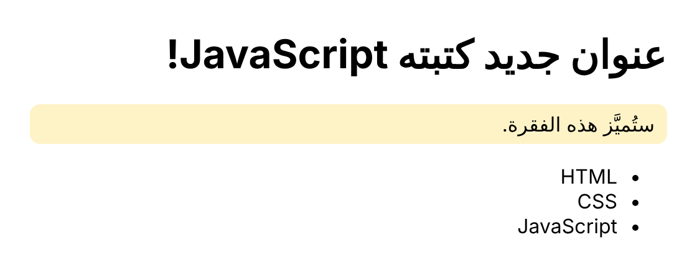
| الكود | ماذا يفعل |
|---|---|
document.querySelector(".note") | أول عنصر صنفه note |
document.querySelectorAll("li") | كل العناصر المطابقة، قائمةً تمرّ عليها بحلقة |
element.textContent = "…" | يستبدل نص العنصر |
element.classList.add("x") | يضيف صنفاً (ومعه remove وtoggle) |
document.createElement("li") | ينشئ عنصراً جديداً، ليس في الصفحة بعد |
parent.append(child) | يضع عنصراً داخل آخر، في آخره |
الحدث (event) شيء يحدث في الصفحة: نقرة، أو ضغطة مفتاح، أو إرسال نموذج، أو حركة فأرة. وتخبر العنصر بما يفعله حين يقع حدث بـ addEventListener:
... <body> <h1>عدّاد بِت</h1> <p id="output">ضغطت 0 مرات</p> <button id="add">اضغطني</button> <button id="reset" class="secondary">تصفير</button> <script src="counter.js"></script> </body> ...
const output = document.querySelector("#output"); const addButton = document.querySelector("#add"); const resetButton = document.querySelector("#reset"); let count = 0; function show() { output.textContent = `ضغطت ${count} مرات`; } addButton.addEventListener("click", () => { count++; show(); }); resetButton.addEventListener("click", () => { count = 0; show(); });
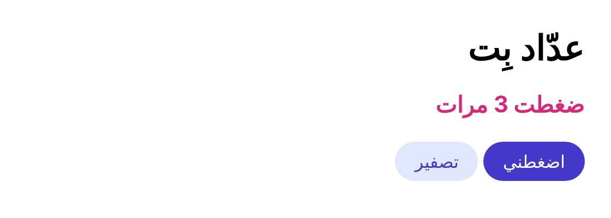
اقرأ addButton.addEventListener("click", () => { … }) هكذا: «حين يُنقر addButton نفّذ هذه الدالة». والدالة دالة رد نداء مثل التي أعطيتها لـ map في الفصل 10. لا تستدعيها أنت، بل يستدعيها المتصفح كلما وقع الحدث.
ولاحظ بنية counter.js. البيانات تعيش في متغير، count. ومعالجات الأحداث تغيّر البيانات، ثم تستدعي show() التي تحدّث الصفحة من البيانات. والفصل بين هذه الثلاثة (البيانات، والتغييرات، والعرض) هو الفكرة التي يقوم عليها كل إطار حديث للواجهات، ومنها React وVue في الكتاب الثاني.
| الحدث | يقع حين |
|---|---|
click | يُنقر العنصر أو يُلمس |
input | تتغير قيمة حقل نصي، مع كل ضغطة مفتاح |
submit | يُرسل نموذج، بزر أو بضغط Enter |
keydown | يُضغط مفتاح |
DOMContentLoaded | يُقرأ HTML كله |
النماذج تحتاج خطوة إضافية. فإرسال النموذج يعيد تحميل الصفحة افتراضياً، فيمحو كل ما فعلته JavaScript. وevent.preventDefault() توقف ذلك، فيتولى كودك النموذج بنفسه:
... <body> <form id="greet"> <label for="name">اسمك</label> <input id="name" type="text"> <button type="submit">رحّب بي</button> </form> <p id="output"></p> <script src="greet.js"></script> </body> ...
const form = document.querySelector("#greet"); const input = document.querySelector("#name"); const output = document.querySelector("#output"); form.addEventListener("submit", (event) => { event.preventDefault(); const name = input.value.trim(); if (name === "") { output.textContent = "من فضلك اكتب اسمك."; return; } output.textContent = `أهلاً يا ${name}! مرحباً بك في الويب.`; input.value = ""; });
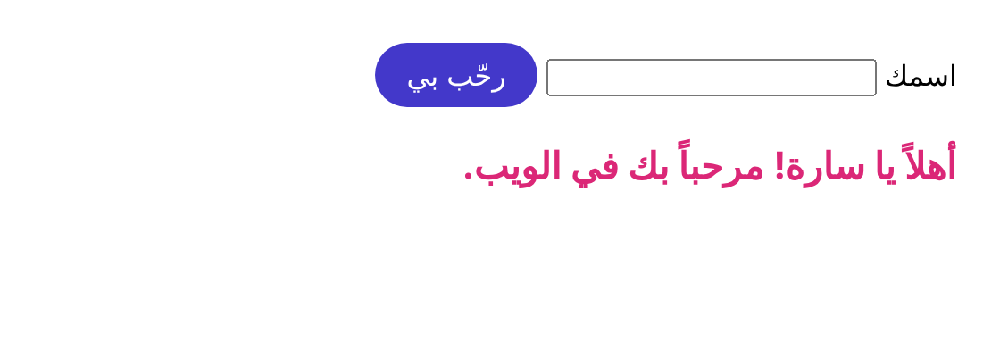
input.value النص الذي في الحقل، وtrim() تزيل المسافات من طرفيه، فتُعد « » فارغة.submit للنموذج، لا click للزر، يجعل ضغط Enter يعمل أيضاً، وهو ما يتوقعه من يستخدمون لوحة المفاتيح.لنضع سلة التسوق من الفصل 11 في صفحة حقيقية. HTML تكاد تكون فارغة: مكان للمنتجات ومكان للسلة، وJavaScript ترسم كل شيء من البيانات:
... <body> <header><h1>متجر بِت</h1></header> <main> <section id="products"></section> <aside id="cart"> <h2>سلتك</h2> <ul id="cart-lines"></ul> <p id="cart-total"></p> </aside> </main> <script src="shop.js"></script> </body> ...
const catalog = [ { id: 1, name: "البرمجة من الصفر", price: 25 }, { id: 2, name: "كوب بِت", price: 8 }, { id: 3, name: "ملصق بِت", price: 3 }, { id: 4, name: "قميص بِت", price: 15 }, ]; const cart = []; // ارسم بطاقة لكل منتج function renderProducts() { const container = document.querySelector("#products"); for (const product of catalog) { const card = document.createElement("article"); card.className = "card"; const name = document.createElement("h3"); name.textContent = product.name; const price = document.createElement("p"); price.textContent = `$${product.price}`; const button = document.createElement("button"); button.textContent = "أضف إلى السلة"; button.addEventListener("click", () => addToCart(product.id)); card.append(name, price, button); container.append(card); } } function addToCart(productId) { const line = cart.find((item) => item.productId === productId); if (line) { line.quantity++; } else { cart.push({ productId, quantity: 1 }); } renderCart(); } // أعد رسم السلة من البيانات كلما تغيرت function renderCart() { const list = document.querySelector("#cart-lines"); list.replaceChildren(); let total = 0; for (const item of cart) { const product = catalog.find((p) => p.id === item.productId); const lineTotal = product.price * item.quantity; total += lineTotal; const li = document.createElement("li"); li.textContent = `${product.name} × ${item.quantity}`; const amount = document.createElement("span"); amount.textContent = `$${lineTotal}`; li.append(amount); list.append(li); } document.querySelector("#cart-total").textContent = cart.length === 0 ? "سلتك فارغة." : `المجموع: $${total}`; } renderProducts(); renderCart();
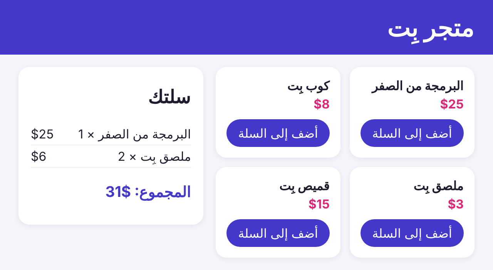
shop.css في مستودع كود الكتاب.البرنامج يتبع نمط العدّاد نفسه، لكنه أكبر:
catalog وcart مصفوفتا كائنات عاديتان، تماماً كما في الفصل 11.renderProducts ترسم بطاقة لكل منتج، وrenderCart تُفرغ قائمة السلة بـ replaceChildren() وترسمها من البيانات من جديد.addToCart، فتغيّر البيانات ثم تستدعي renderCart.قد تبدو إعادة رسم السلة كلها بعد كل تغيير إسرافاً، لكنها بسيطة وموثوقة: الصفحة لا يمكن أن تختلف مع البيانات أبداً. ولسلة بهذا الحجم تستغرق أقل بكثير من جزء من الألف من الثانية.
بِت
افتح shop.html في متصفحك وانقر كما تشاء! ثم افتح أدوات المطورين، واكتب cart في الـ Console واضغط Enter، فترى البيانات التي خلف الصفحة. غيّر سعراً في catalog وأعد التحميل، وشاهد المتجر كله يتحدث.
| الخطأ | ماذا يحدث | العلاج |
|---|---|---|
السكربت في <head> | querySelector تُرجع null، ثم TypeError | ضع السكربتات في آخر body |
محدد بلا # أو . | يبحث عن نوع عنصر غير موجود | "#add" للمعرّفات، و".card" للأصناف |
استدعاء المعالج: addEventListener("click", show()) | يُنفَّذ مرة فوراً ثم لا يُنفَّذ أبداً | مرّر الدالة بلا قوسين |
نسيان preventDefault() | تُعاد الصفحة وتختفي النتيجة | استدعها أولاً في معالجات submit |
وضع نص المستخدم في innerHTML | ثغرة أمنية (XSS) | استخدم textContent |
<script src> في آخر body.querySelector وquerySelectorAll تجدان العناصر بمحددات CSS.textContent وclassList وcreateElement وappend.addEventListener(event, callback) تتفاعل مع click وinput وsubmit وغيرها.event.preventDefault()، واقرأ الحقول بـ .value.إجابات «اختبر نفسك»: 1. document.querySelector("#total"). 2. لتكون كل العناصر في الصفحة حين يبحث عنها السكربت. 3. تمنع المتصفح من إرسال النموذج وإعادة تحميل الصفحة.
dark على body، واكتب CSS للوضع الداكن.<textarea> اعرض «42 / 280» وحدّثه مع كل حدث input، واجعله أحمر إن تجاوز 280.حلول التمارين في آخر الكتاب، وفي مستودع الكود الخاص بالكتاب.
منتجات المتجر مكتوبة داخل ملف JavaScript، أما المتاجر الحقيقية فتحمّلها من خادم. وفي الفصل القادم ستتعلم JavaScript غير المتزامنة وfetch، وتحمّل بيانات حقيقية من الإنترنت دون أن تتجمد الصفحة.
الفصل 13
ستتعلم في هذا الفصل أن
async وawaitfetchtry وcatch، وتعرض حالتي التحميل والخطأبعض الأشياء تستغرق وقتاً. فطلب بيانات من خادم في قارة أخرى قد يأخذ نصف ثانية، واتصال هاتف بطيء قد يأخذ خمس ثوانٍ. ولو توقفت JavaScript وانتظرت لتجمدت صفحتك كلها: لا تمرير ولا نقر ولا شيء. بدلاً من ذلك تبدأ JavaScript العمل البطيء، وتمضي في أشياء أخرى، وتعود حين تجهز النتيجة. ويُسمى هذا البرمجة غير المتزامنة، وهي الطريقة التي يتحدث بها كل تطبيق حديث مع الإنترنت.
بِت
تخيّل أنك تطلب الطعام في مطعم. لا تقف في المطبخ حتى ينضج، بل تجلس وتتحدث، ويأتيك النادل بالطعام حين يجهز. وJavaScript تتعامل مع المهام البطيئة بالطريقة نفسها!
شغّل هذا البرنامج وانظر جيداً إلى ترتيب المخرجات:
console.log("1. تم الطلب"); setTimeout(() => { console.log("3. وصل الطعام!"); }, 1000); console.log("2. أقرأ كتاباً وأنا أنتظر");
1. تم الطلب 2. أقرأ كتاباً وأنا أنتظر 3. وصل الطعام!
طُبع السطر الثاني قبل الثالث مع أنه بعده في الكود. فـ setTimeout لا تنتظر، بل تطلب من الحاسوب تشغيل دالة بعد 1000 جزء من الثانية، وتمضي فوراً. وحين يحين الوقت تُنفَّذ الدالة.
الكود الذي يُنفَّذ سطراً بعد سطر، وكل سطر ينتظر الذي قبله، كود متزامن (synchronous). والكود الذي يبدأ مهمة ويستمر دون انتظار نتيجتها كود غير متزامن (asynchronous). والمؤقتات وطلبات الشبكة وقراءة الملفات كلها غير متزامنة.
الوعد (promise) كائن يمثل نتيجة لم تجهز بعد: «أعدك أن أعطيك قيمة لاحقاً، أو أن أخبرك بما ساء». والوعد يكون أولاً معلّقاً، ثم إما يُوفى بقيمة أو يُرفض بخطأ.
وJavaScript الحديثة تسهّل استخدام الوعود بكلمتين. فالدالة الموسومة بـ async تستطيع استخدام await، التي توقف تلك الدالة وحدها حتى يجهز الوعد، دون أن تجمّد أي شيء آخر:
function wait(ms) { return new Promise((resolve) => setTimeout(resolve, ms)); } async function makeTea() { console.log("أغلي الماء…"); await wait(300); console.log("أنقع الشاي…"); await wait(300); console.log("انتهيت."); return "كوب من الشاي"; } makeTea().then((result) => console.log(result)); console.log("في الأثناء، أجهّز المائدة.");
أغلي الماء… في الأثناء، أجهّز المائدة. أنقع الشاي… انتهيت. كوب من الشاي
داخل makeTea تحدث الخطوات بالترتيب، فيُقرأ الكود كأنه وصفة. لكن أثناء انتظارها يستمر بقية البرنامج: «في الأثناء، أجهّز المائدة» طُبعت ثانياً. والدالة async تُرجع دائماً وعداً، و.then() تشغّل دالة بنتيجته حين يجهز.
fetch(url) ترسل طلب HTTP، مثل الطلبات التي قرأتها في الفصل 4 تماماً، وتُرجع وعداً بالرد. ولكي يعمل المثال في أي مكان حتى بلا إنترنت، يشغّل أولاً خادم واجهة برمجية صغيراً خاصاً به:
const http = require("node:http"); // خادم واجهة برمجية صغير له عنوان واحد: /api/products const products = [ { id: 1, name: "البرمجة من الصفر", price: 25 }, { id: 2, name: "كوب بِت", price: 8 }, { id: 3, name: "ملصق بِت", price: 3 }, ]; const server = http.createServer((request, response) => { if (request.url === "/api/products") { response.writeHead(200, { "Content-Type": "application/json" }); response.end(JSON.stringify(products)); } else { response.writeHead(404); response.end(); } }); // كود العميل: هذا ما يعمل في التطبيق الحقيقي async function getJson(url) { const response = await fetch(url); if (!response.ok) { throw new Error(`HTTP ${response.status}`); } return response.json(); } server.listen(3001, async () => { const list = await getJson("http://localhost:3001/api/products"); console.log(list.length, list[0].name); try { await getJson("http://localhost:3001/api/missing"); } catch (error) { console.log("تعذّر التحميل:", error.message); } server.close(); });
3 البرمجة من الصفر تعذّر التحميل: HTTP 404
الدالة getJson قلب هذا الفصل. اقرأها ببطء، فستكتب كوداً مثلها بقية مسيرتك:
await fetch(url) ترسل الطلب وتنتظر ترويسات الرد.response.ok قيمتها true لرموز الحالة من 200 إلى 299. و404 أو 500 ليسا خطأً عند fetch، فعليك أن تفحص بنفسك.throw new Error(…) تبلّغ عن مشكلة. توقف الدالة مثل return، لكن فشلاً.response.json() تقرأ الجسم وتحلل JSON، وهذا يأخذ وقتاً أيضاً، فتُرجع وعداً كذلك.الشبكة غير موثوقة: الهواتف تفقد الإشارة، والخوادم تتعطل، والعناوين تتغير. والكود الاحترافي يتوقع الفشل. فحين يُرمى خطأ، تقفز JavaScript إلى أقرب catch:
try {
// code that might fail
} catch (error) {
// what to do if it does: error.message says what happened
}
في fetch.js أرجع طلب /api/missing الرمز 404، فرمت getJson خطأً، وطبع catch رسالة هادئة بدل أن ينهار البرنامج. وفي صفحة الويب يتيح لك النمط نفسه أن تعرض «حاول مرة أخرى» لطيفة بدل صفحة معطوبة.
كانت منتجات متجر الفصل 12 مكتوبة داخل shop.js. أما المتاجر الحقيقية فتأخذها من خادم، ليغيّر صاحب المتجر منتجاته دون أن يلمس الكود. فلننقلها إلى ملف JSON بجانب الصفحة:
[
{
"id": 1,
"name": "البرمجة من الصفر",
"price": 25
},
{
"id": 2,
"name": "كوب بِت",
"price": 8
},
{
"id": 3,
"name": "ملصق بِت",
"price": 3
},
{
"id": 4,
"name": "قميص بِت",
"price": 15
},
{
"id": 5,
"name": "قبعة بِت",
"price": 12
}
]الآن يبدأ catalog فارغاً، ودالة جديدة اسمها start تحمّل البيانات وتعرض الحالات الثلاث. وهذه نهاية shop.js الجديدة، وبقية الملف كما كان في الفصل 12:
let catalog = [];
…
async function start() {
const status = document.querySelector("#status");
status.textContent = "جارٍ تحميل المنتجات…";
try {
const response = await fetch("products.json");
if (!response.ok) {
throw new Error(`HTTP ${response.status}`);
}
catalog = await response.json();
status.textContent = "";
renderProducts();
renderCart();
} catch (error) {
status.textContent = "عذراً، تعذّر تحميل المنتجات. حاول مرة أخرى.";
console.error(error);
}
}
start();
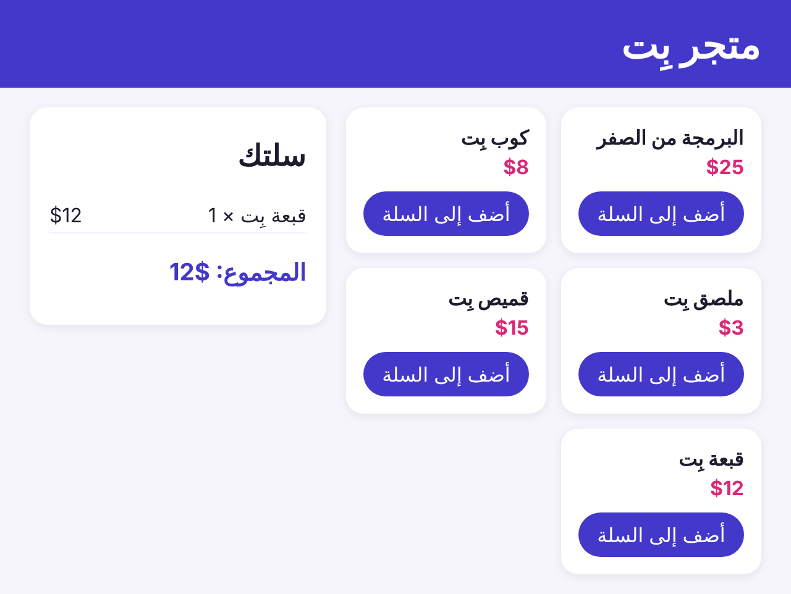
products.json، ومعها القبعة الجديدة.ولتختبر حالة الخطأ، غيّر اسم products.json وأعد التحميل: سترى الرسالة اللطيفة بدل صفحة فارغة. وافتح تبويب Network في أدوات المطورين لترى طلب products.json ورمزه 404.
| الخطأ | ماذا يحدث | العلاج |
|---|---|---|
نسيان await | تحصل على كائن Promise بدل البيانات | انتظر بـ await كل وعد تحتاج قيمته |
await خارج دالة async | SyntaxError | اوسم الدالة بـ async |
عدم فحص response.ok | تُحلَّل صفحة 404 على أنها JSON فتفشل بغرابة | افحص ok وارمِ خطأً واضحاً |
لا try/catch | مشكلة شبكة واحدة تعطل الصفحة كلها | التقط الأخطاء واعرض رسالة |
فتح صفحة تستخدم fetch بـ file:// | يُحجب الطلب | استخدم Live Server أو npx serve |
async تنتظر الوعود بـ await، فيُقرأ الكود بالترتيب وتبقى الصفحة مستجيبة.fetch(url) تُرجع رداً. افحص response.ok ثم await response.json().throw تبلّغ عن الأخطاء، وtry/catch تتعامل معها.إجابات «اختبر نفسك»: 1. لأن setTimeout لا تنتظر: تجدول الدالة لاحقاً ويمضي البرنامج مباشرة. 2. لا. fetch لا تفشل إلا حين يتعذر إرسال الطلب أصلاً، وعليك فحص response.ok. 3. داخل دالة async، أو في أعلى مستوى من الوحدة.
async وawait والدالة wait.fetch.js أضف عنواناً ثانياً، /api/hello، يُرجع {"message": "أهلاً!"}، واجلبه.start() مرة أخرى.Promise.all، واستخدمها لجلب ملفي JSON في الوقت نفسه وطباعة النتيجتين.https://api.github.com/users/ متبوعة باسم مستخدم، لتبني صفحة تعرض اسم مستخدم GitHub وصورته وعدد مستودعاته العامة. وتعامل مع حالة «المستخدم غير موجود».حلول التمارين في آخر الكتاب، وفي مستودع الكود الخاص بالكتاب.
كلما كبرت البرامج زادت طرق تعطلها. والفصل القادم يحوّل رسائل الخطأ من شيء مخيف إلى أكثر أصدقائك نفعاً، ويعلمك تقنيات تتبّع الأخطاء التي يستخدمها المحترفون كل يوم.
الفصل 14
ستتعلم في هذا الفصل أن
console.log والمصحّحكل مبرمج، من يومه الأول إلى عامه الأربعين، يقضي جزءاً كبيراً من وقته في إصلاح ما لا يعمل. والفرق بين المبتدئ والمحترف ليس أن المحترف يخطئ أقل، بل أنه لا يخاف الأخطاء، ويقرأ ما يقوله الحاسوب، ويتبع طريقة. وفي آخر هذا الفصل سيبدو لك النص الأحمر في الطرفية ملاحظة مفيدة لا كارثة.
بِت
هذه أهم جملة في الفصل: رسالة الخطأ تحاول مساعدتك. فهي تقول غالباً ما الذي ساء وأين بالضبط. ومعظم المبتدئين يرتبكون ويتوقفون عن القراءة بعد أول كلمة. فلنقرأها كلها معاً!
هذا برنامج صغير فيه خطأ إملائي، وهذا ما يقوله Node.js حين تشغّله:
const score = 10; console.log(scor);
console.log(scor);
^
ReferenceError: scor is not definedأخبرنا Node.js: في الملف reference.js، في السطر 2، في المكان الذي تشير إليه ^، يوجد ReferenceError: scor غير معرّف. وهذا كل ما تحتاجه: تنظر إلى السطر 2، فترى scor، وتدرك أنك قصدت score. وConsole المتصفح يعرض المعلومات نفسها، واسم الملف ورقم السطر رابطاً تنقر عليه.
استخدمت اسماً لا تعرفه JavaScript، كما في المثال السابق. والسبب في الأغلب خطأ إملائي، أو متغير مستخدم خارج نطاقه (الفصل 10)، أو شيء مستخدم قبل أن يُنشأ.
const user = undefined; console.log(user.name);
console.log(user.name);
^
TypeError: Cannot read properties of undefined (reading 'name')هذا أشهر خطأ في JavaScript كلها. حاولت قراءة name من undefined، وليس لها خصائص. وفي البرامج الحقيقية يكون user مساوياً لـ undefined لأن find لم تجد شيئاً، أو لأن الخادم لم يُرجع بيانات، أو لأن اسم خاصية كُتب خطأ. والسؤال الذي تطرحه: «لماذا هذه القيمة undefined وأنا توقعت كائناً؟»
const prices = [10, 20, 30; console.log(prices);
const prices = [10, 20, 30;
^
SyntaxError: Unexpected token ';'SyntaxError يقع قبل أن يُنفَّذ أي شيء: JavaScript لا تستطيع حتى فهم الكود. وهنا فُتحت المصفوفة بـ [ ولم تُغلق بـ ]. ومع أخطاء الصياغة يكون الخطأ الحقيقي كثيراً قبل المكان المشار إليه بقليل: قوس أو علامة تنصيص أو فاصلة ناقصة. وVS Code يضع خطاً أحمر تحت معظمها وأنت تكتب، قبل أن تشغّل الكود أصلاً.
| الخطأ | معناه | أول ما تفحصه |
|---|---|---|
ReferenceError | الاسم غير موجود هنا | الإملاء والنطاق |
TypeError | القيمة من نوع خاطئ، وكثيراً undefined | من أين جاءت القيمة |
SyntaxError | الكود ليس JavaScript صحيحة | الأقواس وعلامات التنصيص والفواصل قبل الموضع المشار إليه |
في البرامج الأكبر تستدعي الدوال دوالاً تستدعي غيرها. وحين يقع خطأ في العمق يطبع Node.js مسار الاستدعاءات (stack trace): طريق الاستدعاءات الذي أدى إلى الخطأ.
function getCity(user) { return user.address.city; } function welcome(user) { return `أهلاً من ${getCity(user)}!`; } console.log(welcome({ name: "سارة" }));
stack.js:2
return user.address.city;
^
TypeError: Cannot read properties of undefined (reading 'city')
at getCity (stack.js:2:23)
at welcome (stack.js:6:22)
at Object.<anonymous> (stack.js:9:13)اقرأ الأسطر التي تبدأ بـ at من الأعلى إلى الأسفل: وقع الخطأ في getCity (السطر 2)، التي استدعتها welcome (السطر 6)، التي استُدعيت من الكود الرئيسي (السطر 9). الخطأ في getCity، لكن السبب حيث جاءت البيانات: كائن المستخدم في السطر 9 ليس فيه address. ومسار الاستدعاءات يتيح لك أن تمشي إلى الخلف من العَرَض إلى السبب.
أصعب العلل لا تُظهر أي خطأ: يعمل البرنامج ويعطي جواباً خاطئاً:
// متوسط 10 و20 و30 يجب أن يكون 20… function average(numbers) { let total = 0; for (let i = 1; i < numbers.length; i++) { total = total + numbers[i]; } return total / numbers.length; } console.log(average([10, 20, 30]));
16.666666666666668
لا نص أحمر، لكن 16.67 ليست 20. وحين لا يخبرك شيء بمكان المشكلة، تجعل البرنامج يخبرك. وأبسط أداة لذلك console.log: اطبع القيم التي تشك فيها، في اللحظات التي تشك فيها.
function average(numbers) { let total = 0; for (let i = 1; i < numbers.length; i++) { console.log("i =", i, "number =", numbers[i], "total =", total); total = total + numbers[i]; } console.log("المجموع النهائي:", total); return total / numbers.length; } console.log(average([10, 20, 30]));
i = 1 number = 20 total = 0 i = 2 number = 30 total = 20 المجموع النهائي: 50 16.666666666666668
صارت العلّة واضحة: الحلقة تبدأ من i = 1، فلا تضيف الرقم الأول، 10، أبداً، ويكون المجموع 50 بدل 60. وهذا جدول التتبع من الفصل 2، يكتبه الحاسوب. أصلح السبب، وهنا باستخدام for…of التي لا يمكن أن تتخطى العنصر الأول، واختبر مرة أخرى ومعها حالة غير معتادة:
function average(numbers) { let total = 0; for (const number of numbers) { total = total + number; } return total / numbers.length; } console.log(average([10, 20, 30])); console.log(average([7]));
20 7
const cart = [ { name: "Book", price: 25, quantity: 1 }, { name: "Sticker", price: 3, quantity: 2 }, ]; console.log("عدد العناصر في السلة:", cart.length); console.table(cart); console.error("هناك خطأ هنا!");
عدد العناصر في السلة: 2 ┌─────────┬───────────┬───────┬──────────┐ │ (index) │ name │ price │ quantity │ ├─────────┼───────────┼───────┼──────────┤ │ 0 │ 'Book' │ 25 │ 1 │ │ 1 │ 'Sticker' │ 3 │ 2 │ └─────────┴───────────┴───────┴──────────┘ هناك خطأ هنا!
أعطِ كل سطر طباعة عنواناً لتعرف أي سطر طبع ماذا. واستخدم console.table لمصفوفات الكائنات، وconsole.error للمشكلات، فهي تظهر في المتصفح بالأحمر مع مسار الاستدعاءات. وتذكّر أن تحذف أسطر التتبع حين تُصلح العلّة.
console.log تعرض قيماً قليلة في لحظات قليلة. أما المصحّح (debugger) فيتيح لك أن توقف البرنامج عند أي سطر وتنظر إلى كل شيء. في المتصفح افتح أدوات المطورين، واذهب إلى لوحة Sources، وافتح ملفك، وانقر رقم سطر، فتظهر علامة زرقاء: نقطة توقف (breakpoint). وفي المرة التالية التي يُنفَّذ فيها ذلك السطر تتجمد الصفحة عنده.
وأثناء التوقف تستطيع أن تمرر الفأرة على أي متغير لترى قيمته، وأن تراها كلها في قسم Scope، وأن تضغط Step لتنفّذ سطراً واحداً كل مرة وتشاهد القيم تتغير. ويمكنك أيضاً أن تكتب الكلمة debugger; في كودك، فحين تكون أدوات المطورين مفتوحة يتوقف البرنامج عندها. وفي VS Code الأدوات نفسها لبرامج Node.js، في عرض Run and Debug.
حين يسوء شيء، قاوم الرغبة في تغيير الأشياء عشوائياً، واتبع هذه الخطوات بدلاً من ذلك:
user يساوي undefined لأن find لم تجد شيئاً».console.log أو نقطة توقف، لا بتغيير الكود على غير هدى.undefined. SyntaxError: الكود غير صحيح.console.log معنونة، وconsole.table وconsole.error.إجابات «اختبر نفسك»: 1. كود ما حاول قراءة .price من قيمة تساوي undefined، فابحث لماذا تلك القيمة مفقودة. 2. أول سطر يشير إلى أحد ملفاتك أنت. 3. console.log بعناوين (أو نقطة توقف) لترى القيم خطوة خطوة.
console.log("hi) وconst a = 1; a = 2; وlet list; list.push(1); وconsol.log(5);stack.js بطريقتين: بإعطاء المستخدم عنواناً، وبجعل getCity تُرجع "مكان ما" حين لا يوجد عنوان.addToCart في متجر الفصل 12. انقر «أضف إلى السلة» وتقدّم في الدالة خطوة خطوة، وراقب cart وهي تتغير.console.log: function count(words) { let n = 0; for (const w of words) { if (w.length > 3) n = 1; } return n; }حلول التمارين في آخر الكتاب، وفي مستودع الكود الخاص بالكتاب.
الجزء الرابع عن العمل كالمحترفين، ويبدأ بـ Git: الأداة التي تتذكر كل نسخة من كودك، وتتيح لك التراجع عن أي خطأ، وتتيح لفرق كاملة العمل على المشروع نفسه دون أن يدوس أحد على أقدام غيره.
الفصل 15
ستتعلم في هذا الفصل أن
git add وgit commitهل حفظت يوماً ملفات اسمها profile-final.html وprofile-final-2.html وprofile-REALLY-final.html؟ واجه المطورون المحترفون المشكلة نفسها، وحلّوها بأداة اسمها Git. يتذكر Git كل نسخة من كل ملف في مشروعك، ويتيح لك العودة إلى أي منها، ويتيح لأشخاص كثيرين العمل على الكود نفسه في الوقت نفسه. ويستخدمه تقريباً كل فريق برمجيات في العالم.
بِت
Git مثل نقاط الحفظ في ألعاب الفيديو. قبل أن تجرب شيئاً خطيراً تحفظ، وإن ساء الأمر تحمّل آخر حفظ وتحاول من جديد. لكن مع Git تحتفظ بـكل حفظ إلى الأبد، ومعه ملاحظة عما فعلته!
نظام التحكم في الإصدارات (version control) يسجّل تغييرات الملفات عبر الزمن. وبه تستطيع أن:
Git هو نظام التحكم في الإصدارات الذي يستخدمه الجميع تقريباً اليوم. وهو مجاني، ويعمل على حاسوبك، حتى بلا إنترنت. وGitHub موقع يحفظ مشاريع Git على الإنترنت، لتنسخها احتياطياً وتشاركها وتعمل عليها مع غيرك. فـ Git هو الأداة، وGitHub أحد الأماكن التي تحفظ فيها ما يسجّله Git.
نزّل Git من git-scm.com وثبّته بالخيارات الافتراضية (وعلى الماك قد يكون مثبتاً أصلاً: جرّب git --version). ثم أخبر Git باسمك وبريدك، فهو يكتبهما على كل لقطة تحفظها:
# عرّف Git بنفسك (مرة واحدة لكل حاسوب) $ git config --global user.name "Sara Khan" $ git config --global user.email "sara@example.com" $ git config --global init.defaultBranch main
السطر الأخير يجعل المشاريع الجديدة تسمي الفرع الرئيسي main، وهو المعيار اليوم. وستتعرف على الفروع في القسم 15.5.
مشروع Git يُسمى مستودعاً (repository أو repo)، واللقطة من المشروع تُسمى commit. وحفظ commit خطوتان: أولاً تختار التغييرات التي تدخل فيه، ثم تحفظها مع رسالة.
git add، وإلى التاريخ بـ git commit.وهذه العملية كاملة لموقع الفصل 7 التعريفي، منفّذة في مجلده:
# ابدأ تتبّع هذا المجلد $ git init Initialized empty Git repository in /Users/sara/code-from-zero/profile/.git/ $ git status --short ?? index.html ?? style.css # اختر ما يدخل اللقطة التالية $ git add index.html style.css $ git status --short A index.html A style.css # احفظ اللقطة مع رسالة $ git commit -m "إضافة الصفحة التعريفية" [main (root-commit) 166f9d5] إضافة الصفحة التعريفية 2 files changed, 2 insertions(+) create mode 100644 index.html create mode 100644 style.css
git init تحوّل المجلد إلى مستودع، وتنشئ مجلداً مخفياً اسمه .git يعيش فيه التاريخ؛ لا تعدّله بيدك أبداً.git status هو الأمر الذي ستكتبه أكثر من غيره. و--short تعطي عرضاً مختصراً: ?? تعني ملفاً جديداً لا يتتبعه Git بعد، وA تعني أنه أُضيف إلى منطقة التجهيز.git add تضع التغييرات في منطقة التجهيز، وgit add . تضيف كل ما في المجلد.git commit -m "…" تحفظ اللقطة، ويعطيها Git معرّفاً، هنا 166f9d5، تجدها به لاحقاً.عدّل الآن index.html وأضف سطراً، واسأل Git عما تغيّر:
# عدّل index.html في VS Code، ثم: # ما الذي تغيّر منذ آخر commit؟ $ git diff diff --git a/index.html b/index.html index 6732327..0525cbc 100644 --- a/index.html +++ b/index.html @@ -1 +1,2 @@ <h1>سارة خان</h1> +<p>مطورة ويب مبتدئة</p> $ git commit -am "إضافة الوصف" [main f42d185] إضافة الوصف 1 file changed, 1 insertion(+) # التاريخ، الأحدث أولاً $ git log --oneline f42d185 إضافة الوصف 166f9d5 إضافة الصفحة التعريفية
git diff تعرض التغييرات التي لم تحفظها بعد: الأسطر التي تبدأ بـ + أُضيفت، والتي تبدأ بـ - حُذفت. وgit commit -am تضيف كل الملفات المتتبَّعة المتغيرة وتحفظها في خطوة واحدة. وgit log --oneline تعرض التاريخ، commit واحداً في كل سطر.
| الموقف | الأمر |
|---|---|
| تخلّص من تغييراتي غير المحفوظة في ملف | git restore index.html |
| أخرج ملفاً من منطقة التجهيز | git restore --staged index.html |
| انظر إلى المشروع كما كان في commit قديم | git switch --detach 166f9d5 (وgit switch main للعودة) |
| ألغِ commit بإضافة commit جديد يعكسه | git revert f42d185 |
الفرع (branch) خط عمل منفصل. والفرع الرئيسي، main، يحمل النسخة التي تعمل. وحين تبدأ ميزة جديدة تنشئ لها فرعاً، تعمل فيه وتحفظ بحرية، وحين تجهز تدمجها (merge) في main:
main، وتكون له لقطاته، ثم يُدمج فيه.# فرع جديد لميزة جديدة $ git switch -c contact Switched to a new branch 'contact' # أنشئ contact.html، ثم: $ git add contact.html $ git commit -m "إضافة قسم التواصل" [contact 6090844] إضافة قسم التواصل 1 file changed, 1 insertion(+) create mode 100644 contact.html # العودة إلى الفرع الرئيسي: يختفي contact.html من المجلد $ git switch main Switched to branch 'main' # ادمج الميزة $ git merge contact Updating f42d185..6090844 Fast-forward contact.html | 1 + 1 file changed, 1 insertion(+) create mode 100644 contact.html $ git log --oneline --graph * 6090844 إضافة قسم التواصل * f42d185 إضافة الوصف * 166f9d5 إضافة الصفحة التعريفية
git switch -c contact تنشئ فرعاً اسمه contact وتنتقل إليه. والحفظ فيه لا يمس main: فحين تعود إليه يختفي contact.html من مجلدك، ويعود حين تنتقل إلى contact مرة أخرى. وgit merge contact تُدخل لقطات الفرع في main. ولأن main لم يتغير في هذه الأثناء، حرّكه Git إلى الأمام ببساطة، ويسمي ذلك fast-forward.
أنشئ حساباً مجانياً على github.com، واضغط New repository، وأعطه اسماً، واتركه فارغاً. فيعرض لك GitHub عنوانه. اربط مستودعك المحلي به وأرسل إليه لقطاتك:
# اربط المجلد بمستودع فارغ أنشأته على github.com $ git remote add origin https://github.com/sara-khan/profile.git $ git push -u origin main Enumerating objects: 11, done. Writing objects: 100% (11/11), 1.02 KiB | 1.02 MiB/s, done. To https://github.com/sara-khan/profile.git * [new branch] main -> main branch 'main' set up to track 'origin/main'. # لاحقاً، على أي حاسوب: $ git clone https://github.com/sara-khan/profile.git $ git pull
origin بحكم العادة.git push ترسل لقطاتك إلى المستودع البعيد. وفي المرة الأولى تتذكر -u origin main أين ترسل، فيكفي بعدها git push وحدها.git clone تنزّل مستودعاً كاملاً، بتاريخه، على حاسوب آخر.git pull تجلب اللقطات التي أرسلها غيرك (أو أنت من حاسوب آخر).وفي أول مرة ترسل فيها يطلب منك Git تسجيل الدخول إلى GitHub. اتبع التعليمات في نافذة المتصفح التي يفتحها؛ فـ GitHub لم يعد يقبل كلمة مرور حسابك مباشرة في الطرفية.
بعض الملفات لا تنتمي إلى المستودع: الحزم المنزّلة التي يمكن إعادة تثبيتها، وملفات النظام، والسجلات، وقبل كل شيء الأسرار مثل كلمات المرور ومفاتيح الواجهات البرمجية. اكتبها في ملف اسمه .gitignore فلن يتتبعها Git أبداً:
# ملفات لا يتتبعها Git أبداً
node_modules/
.env
.DS_Store
*.logفي الفريق لا يحفظ أحد مباشرة في main، بل يتبع كل تغيير المسار نفسه:
main.وهكذا يكون كل سطر في main قد رآه شخصان على الأقل. ومراجعة الكود من أفضل طرق التعلم: ستتعلم من قراءة طلبات دمج غيرك بقدر ما تتعلم من كتابة طلباتك.
git init تبدأ مستودعاً، وgit status تعرض الحال.git add تجهّز التغييرات، وgit commit -m تحفظ لقطة مع رسالة.git diff وgit log --oneline تعرضان التغييرات والتاريخ، وgit restore وgit revert تتراجعان.git switch -c) تفصل العمل الجديد حتى يُدمج.git push وgit pull وgit clone تعمل مع مستودع بعيد مثل GitHub..gitignore تُبعد الأسرار والملفات المولّدة، والفرق تعمل بالفروع وطلبات الدمج.إجابات «اختبر نفسك»: 1. git add لاختيار التغييرات، ثم git commit لحفظها. 2. Git الأداة التي تسجّل النسخ على حاسوبك، وGitHub موقع يحفظ مستودعات Git على الإنترنت ويساعد الناس على العمل عليها معاً. 3. لأنها تبقى في التاريخ، حيث يجدها كل من يصل إلى المستودع.
code-from-zero تحت Git، واحفظ أول commit فيه كل ما كتبته حتى الآن.git diff، ثم تخلص منه بـ git restore.dark-mode، وأضف فيه وضعاً داكناً لصفحتك التعريفية في commit اثنين، ثم ادمجه في main.index.html بطريقتين في فرعين، وادمجهما، وحُلّ التعارض.حلول التمارين في آخر الكتاب، وفي مستودع الكود الخاص بالكتاب.
صار كودك آمناً وقابلاً للمشاركة. والخطوة التالية أن نتأكد أن صفحاتك صالحة للجميع، ومنهم من يستخدمون قارئات الشاشة، أو لوحة المفاتيح بدل الفأرة، أو النص الكبير. إنها علامة المحترف، وهي أسهل مما تظن.